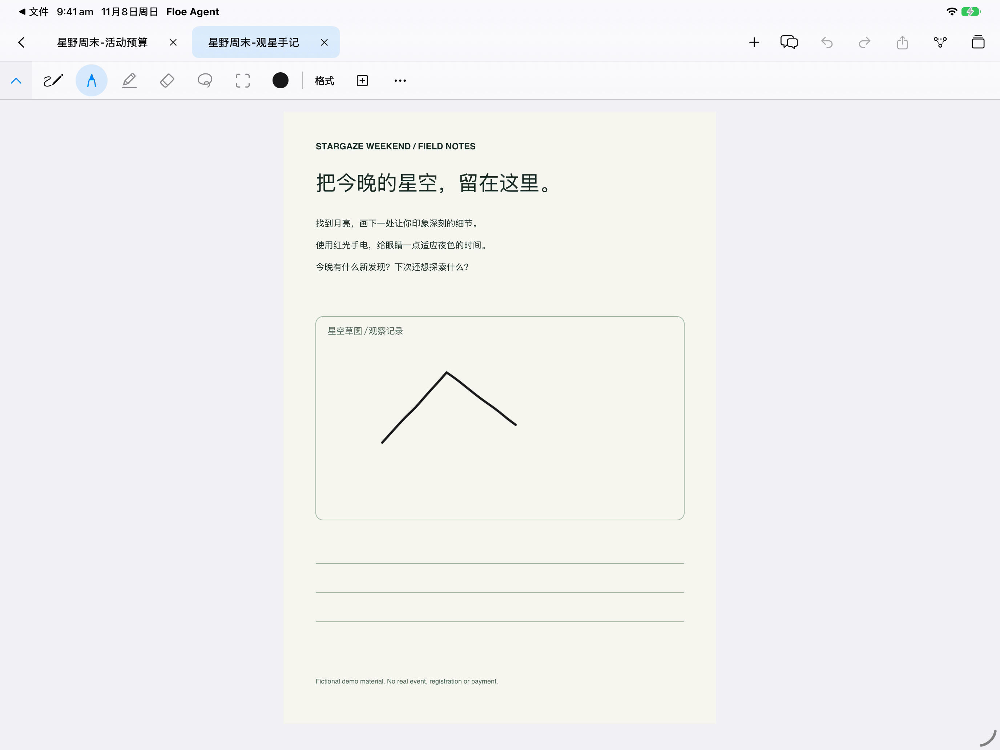

Manual de usuario del agente Floe
Descripción general
Esta guía cubre iOS/iPadOS. Empieza con Desde la instalación hasta su primer resultado. Las versiones App Store, GitHub/Feather y TestFlight se rastrean con fechas de verificación en Estado del canal. Las IPA de GitHub requieren su propia firma; la disponibilidad de TestFlight sigue a su grupo. Ver el Guía del espacio de trabajo Para características específicas de la construcción.
Ver el Guía compartida Para conexiones de modelos, primeras tareas, ahorro y retroalimentación. Este manual cubre la interfaz y las capacidades de esta plataforma.
简体中文 · Documentación · Manual del sitio web
Aprende a usar tareas de IA, Notas, Oficina, Asistente de Dibujo, Lienzo y medios, y desarrollo local y remoto en Floe. Diseñado para iPad y también disponible en iPhone, Floe requiere iOS/iPadOS 26 o posterior.
Esta guía describe los flujos de trabajo; utilice la guía del espacio de trabajo y las notas de la versión seleccionadas para los límites específicos de la compilación. Compruebe la configuración de su versión instalada y Estado de lanzamiento e instalación Para la disponibilidad en cada canal.
Primeros pasos
- 1. Instalación y primer uso
- 2. Modelos y capacidades auxiliares
- 3. Tareas y propiedad del espacio de trabajo
- 4. Conversación, plan, objetivo y recuperación
- 5. Permisos y verificación
- 6. Archivos, editores y cambios simultáneos
Documentos y trabajo creativo
- 7. Notas: importación, búsqueda y escritura a mano
- 8. Oficina: editar, anotar, guardar y volver a abrir
- 14. Dibujos de ingeniería y revisión de IA
- 15. Lienzo, imágenes, audio y vídeo
- 16. Entrada de voz y transcripción
Desarrollo y conexiones
- 9. Terminal local y rendimiento de Linux
- 10. Python, Nodo, paquetes y ejecución de código
- 11. Acciones de Git y GitHub
- 12. Hosts remotos, escritorios y diagnósticos
- 13. Navegador, vistas previas web e inicio de sesión
Más herramientas y ayuda
- Ayuda y guías
- 17. Habilidades, MCP, correo y automatización
- 18. Trabajo en segundo plano, PiP, notificaciones y datos
- 19. Chat temporal (solo RAM)
- 22. Espacio y bancos de trabajo especializados
- 20. Localización y corrección de fallos
- 21. Comentarios útiles
1. Instalación y primer uso

Una tarea completada con su resultado web local. Compruebe el modelo y el espacio de trabajo antes de enviar su primera solicitud. Las capturas de pantalla de este capítulo muestran el App Store 1.7.74 (315); los tutoriales del banco de trabajo en el Guía del espacio de trabajo Sigue las nuevas construcciones 1.8.5 (325).
- Instalar desde el Listado App Store Vinculado en el Sitio web oficial; La disponibilidad sigue su escaparate. Para una versión beta, utilice un grupo TestFlight al que ya tenga acceso y compruebe su compilación, caducidad y notas de prueba.
- Para la entrega de GitHub o Feather/AltStore, siga las instrucciones de instalación en la página de lanzamiento. El IPA del desarrollador GitHub no está firmado y requiere su propio método de firma; no es un paquete TestFlight.
- Completar la incorporación. Utilice la barra lateral en iPhone y varias columnas en iPad; los editores pueden abrir la pantalla completa.
- Core Notes, la organización de archivos y Canvas no requieren un proveedor de IA. Conecte a su proveedor antes de solicitar trabajo de IA.
- Encuentre la versión instalada en Configuración → Diagnósticos y Acerca de e inclúyala en los comentarios.
Para una primera tarea, configure un modelo, cree una conversación de prueba, adjunte un archivo de texto sintético y solicite un resumen. Inspeccione los recibos de la herramienta y abra el archivo de salida. Utilice material de muestra antes de documentos importantes.
Guía de configuración
Elija Light Start, Everyday, Voice Conversation, Development & Creation, o configure las cosas usted mismo. Las recomendaciones solo rellenan previamente las opciones: cada ruta sigue la misma guía completa. La configuración existente se mantiene en su lugar y se puede ajustar individualmente.
| Sección | Lo que puedes configurar |
|---|---|
| Chat y modelos | Conecta un servicio, pruébalo y elige un modelo de chat |
| Imágenes y creación | Comprensión, generación y edición de imágenes, vídeo y el asistente de Canvas |
| Búsqueda en Internet | Agregue y pruebe los servicios de búsqueda y elija un valor predeterminado |
| Voz | Idioma de entrada, voz, velocidad, lectura en voz alta e interrupción |
| Archivos y espacios de trabajo | Carpeta de trabajo, entorno en el dispositivo, ordenadores remotos y repositorios de código |
| Personalización y memoria | Perfil, SOUL.md, memoria y actualizaciones automáticas |
| Permisos y privacidad | Aprobaciones de acciones, características del dispositivo y verificación de identidad |
| Fondo | Audio de fondo, imagen en imagen y otras opciones de fondo |
| Sincronización y almacenamiento | iCloud, configuración y sincronización de credenciales, recursos descargados |
| Habilidades y actualizaciones | Explorar e instalar habilidades y gestionar actualizaciones de contenido |
Vuelve atrás, continúa o deja una sección para más tarde. Conectar un modelo principal no termina la guía antes de tiempo. La descripción general final enlaza con cada sección. Salga y continúe más tarde sin volver a introducir la configuración guardada.
Las descargas no retienen la configuración. Después de iniciar un paquete de voz, modelo o descarga de entorno, continúe con la siguiente sección o comience a usar Floe. Vuelve a su configuración para ver la misma descarga sin iniciar otra. La descripción general final separa los ajustes guardados, los recursos que se están preparando y los elementos que quedan para más tarde.
Las descargas muestran el tamaño real, el progreso y la velocidad. Alcanzar el 100 % puede ir seguido de la comprobación o la instalación; un recurso se vuelve utilizable solo después de que terminen. Una descarga fallida, en pausa o con espacio limitado afecta solo a ese recurso y se puede volver a intentar más tarde. Cerrar su página o salir de la guía no la cancela. El procesamiento en segundo plano y el trabajo después de la salida de la aplicación dependen de los límites del sistema; la reapertura comprueba el estado real y se reanuda u ofrece una acción de continuación.
Una voz descargada no reemplaza otra voz que seleccionó mientras esperaba. Instalar un entorno no lo inicia. Apple Intelligence está desactivado por defecto para los nuevos usuarios y se puede habilitar en un dispositivo compatible. Las opciones existentes se conservan y otros modelos permanecen disponibles en dispositivos sin Apple Intelligence.
Ayuda y guías
Abrir Configuración → Ayuda y guías Para navegar por temas o introducir palabras clave en Guías de búsqueda y configuración. Las guías incluidas en inglés y chino simplificado funcionan sin conexión sin un modelo configurado. En un artículo, usa Índice Para saltar a una sección o Buscar en la página Para buscar su texto; ampliar imágenes, copiar el artículo y ajustar la apariencia y el tamaño del texto.
Pregunte al asistente actual cuando necesite ayuda con una operación. Las citas de la guía en su respuesta abren el capítulo relevante. Cuando Abre Esta Configuración Se ofrece, tóquelo para llegar a esa configuración y haga el cambio usted mismo. La ayuda de cierre vuelve a la tarea o archivo original con su borrador y progreso preservado.
Una actualización fallida de la guía mantiene el contenido existente legible. La actualización de la aplicación conserva las guías más nuevas que ya están en el dispositivo. Cheque Estado del canal Y su compilación instalada para la disponibilidad de funciones.
Inicio rápido de Mac Bridge
Floe Bridge es el compañero opcional de la barra de menús de Mac de Floe Agent. Se ejecuta en el mismo Mac que Floe y le da a ese terminal de tareas, archivo y capacidades de MCP a través de una conexión autenticada solo local, sin una imagen Linux. No es un puente remoto de iPad a Mac, y no expone una dirección LAN ni utiliza un relé remoto.
Comprueba la versión elegida para Macs compatibles, macOS y versiones compatibles con Floe. Ambas aplicaciones se ejecutan en el mismo Mac. Esto es independiente de Puente Floe iOS, El compañero de control iPhone/iPad.
- Abre el Historial de lanzamiento de Mac Bridge, Elija una versión, luego descargue su DMG de la versión vinculada GitHub. Utilice los requisitos de instalación de esa versión y cualquier suma de comprobación proporcionada.
- Abra el DMG, arrastre el puente Floe a Aplicaciones y luego inícielo. Su icono aparece en la barra de menú macOS.
- En Floe en el mismo Mac, elige este Mac para iniciar una conexión. Floe y Floe Bridge muestran cada uno una confirmación nativa; compare el código coincidente y permítalo en ambos lados. Un rechazo en ambos lados deja la conexión cerrada.
- Otorgue solo los permisos que una tarea realmente necesita. El acceso a la carpeta puede solicitarse cuando una tarea de terminal toca una carpeta protegida; la grabación de pantalla y la accesibilidad se solicitan solo para las funciones que las necesitan. Puede revisarlos o revocarlos más tarde en la configuración del sistema macOS.
- Utilice la conexión de la tarea. El terminal, el archivo y las capacidades de MCP terminan cuando te desconectas.
Si el icono de la barra de menú no aparece, vuelva a iniciar Floe Bridge desde Aplicaciones. Si macOS solicita confirmación en el primer lanzamiento, siga el aviso del sistema y no evite una advertencia de seguridad. Si se rechaza una conexión, confirme que ambas aplicaciones están en el mismo Mac, que las versiones cumplen con los requisitos de la versión seleccionada y que ambas partes permiten el mismo código. Para desconectar, use el menú Floe Bridge → Conexiones y almacenamiento... → Desconectar; esto revoca el emparejamiento y termina sus trabajos de terminal. Cierre el puente Floe para detener el oyente local y finalizar los trabajos de terminal restantes.
2. Modelos y capacidades auxiliares
Proveedores de la nube
Abrir Configuración → Proveedores de modelos. Agregue el punto final, el protocolo de cableado, el ID de modelo real y la credencial API proporcionada por su proveedor. Pruebe la configuración, habilite tanto el proveedor como el modelo, elija el modelo de agente predeterminado y, a continuación, verifique la etiqueta del modelo en Nueva tarea.
Los nombres de proveedores y modelos pueden contener guiones, guiones bajos y puntos de versión, como qwen3.5-plus Oregón model_v2.1. Mantenga el ID de modelo real exactamente como se proporciona. Los nombres de visualización de los proveedores normalizan los saltos de línea pegados y el formato invisible incidental mientras preservan Unicode significativo; los nombres de gran tamaño informan su tamaño UTF-8.
Si falta un modelo, compruebe los interruptores del proveedor/modelo y "Ocultar de la lista principal de modelos". La ocultación conserva los usos auxiliares; la desactivación evita nuevas selecciones. Las llamadas del proveedor pueden incurrir en cargos de terceros. Las credenciales pertenecen a Llavero, nunca archivos de proyecto, capturas de pantalla o problemas públicos.
Floe valida el formulario antes de escribir algo. Se informa de un campo no válido en su idioma, no se inicia la escritura y el formulario conserva su contenido. Un guardado local y una carga de iCloud se informan por separado: "Guardado en este dispositivo; la sincronización de iCloud está pendiente" significa que la configuración se confirma localmente y la carga se puede volver a intentar; no es un guardado fallido, y no es necesario volver a introducir una clave API. Los registros remotos que fallan la validación se omiten mientras se mantiene la copia local.
En Añadir texto/imagen/vídeo, pulsa el Proveedor Campo en sí mismo para abrir UN selector de búsqueda: los ajustes preestablecidos del proveedor incorporados (incluida una opción manual/personalizada explícita) y las entradas del catálogo verificadas viven en la misma lista y se filtran juntas a medida que escribe (alias e insignias configuradas incluidas). No hay una fila preestablecida separada, ni el botón "agregar desde el catálogo" ni una página de catálogo separada. Al elegir una entrada, cierra el selector y conserva todo lo demás que ya ha introducido, incluido un nombre para mostrar personalizado. La selección de un proveedor que realmente admite más de un rol de servicio genera una única Usos adicionales Pregunta dónde se fija el rol con el que comenzó y cada rol adicional es opt-in; elija Configurar, Ahora no, O descartar la hoja: no se ofrece de nuevo un puesto rechazado. Los roles adicionales comparten el punto final de esta conexión y la clave API solo cuando el origen, la familia de protocolos y el estilo de autenticación realmente coinciden; un origen diferente se muestra como Configurar por separado Con su propia configuración visible. Cambiar la identidad de la conexión (esquema/host/puerto/familia de proveedores/estilo de autorización) borra la clave escrita y se niega a reutilizar silenciosamente una clave almacenada en todas las conexiones.
Los metadatos del catálogo se verifican por modelo, no se prometen para un proveedor completo. Un modelo que agregue ahora comienza con las capacidades que el catálogo empaquetado realmente verificó para él (por ejemplo, entrada de imagen para un modelo capaz de visión). Los modelos que guardó antes de que existieran metadatos nunca se reescriben silenciosamente: Floe ofrece un único Actualizaciones de la capacidad del modelo Revisión que enumera cada modelo y la capacidad exacta que ganaría (Antes → Después) Y no escribe nada hasta que elijas Aplicar actualizaciones (O Ahora no). Las capacidades que configuras quedan registradas como decisiones tuyas. Una actualización del catálogo o una sincronización de iCloud no revierte esa elección, y lo que desactivaste sigue desactivado. «Admite texto, imágenes o vídeo» indica las funciones que el catálogo verifica para esa entrada. La compatibilidad de una inferencia real se comprueba con la primera solicitud. No se ofrecen GitHub Copilot, Azure, Amazon Bedrock ni Google Vertex al añadir un proveedor, ya que Floe necesita OAuth o puntos de conexión específicos del despliegue para ejecutarlos. Las conexiones que ya guardaste con esos proveedores siguen visibles y se pueden editar.
Los modelos que lo apoyan también tienen un entorno de esfuerzo de razonamiento/pensamiento. Con Automático, Floe le pide a su modelo de texto auxiliar configurado una vez cuando comienza una nueva ronda que elija un esfuerzo para esa solicitud; la decisión se mantiene para la ronda, incluidos los mensajes de guía/guiar y continuación, y no se reclasifica a mitad de ronda. Un esfuerzo manual que elijas nunca se cambia. Si no se configura ningún modelo auxiliar, o el ayudante falla o se agota el tiempo, Floe vuelve al propio valor predeterminado compatible con el modelo.
Volcengine pay-as-you-go y Agent Plan, y Alibaba Cloud pay-as-you-go y Token Plan, son opciones de proveedores separadas. Seleccione el plan que compró; cada uno mantiene su propio punto final, clave y modelos. Guardar o probar uno no cambia a otro canal de facturación.
Elija modelos de suscripción del catálogo público o introduzca un ID de modelo manualmente; los candidatos no establecen el derecho de su cuenta. Conexión de prueba Envía una pequeña solicitud a su modelo de chat seleccionado y puede contar para el uso del plan. Abrir o guardar la configuración no genera imágenes ni vídeos. Los candidatos a la imagen de Volcengine Agent Plan son separados de los modelos de pago por uso; su entrada de vídeo no se ofrece en esta actualización. Alibaba pay-as-you-go y Token Plan utilizan sus respectivos servicios de imagen y vídeo. Un vídeo enviado conserva su ID de tarea existente; una búsqueda de estado fallida no envía otra generación pagada.
Proveedores de búsqueda web
DeepSeek Search está disponible como un proveedor separado con su propia clave y una opción para incluir el contenido de la página. Los resúmenes largos y el contenido se conservan como devueltos por el servicio. La interfaz muestra una proyección concisa; el asistente puede usar el resultado completo dentro de su capacidad de contexto o leer más. Los resúmenes de búsqueda aún necesitan verificación de la fuente.
Configuración → La búsqueda web enumera solo los proveedores que ha agregado. Uso Añadir proveedor Para elegir un servicio o una interfaz personalizada compatible, configure una cuenta y pruebe una búsqueda. Cada cuenta guardada tiene su propio interruptor y prioridad. Actualice el directorio del proveedor desde la pantalla de adición o Ajustes → Actualizaciones; Las actualizaciones de directorios descargadas preservan cuentas y claves guardadas. Los nombres de los proveedores preestablecidos siguen las actualizaciones del directorio automáticamente; los nombres que usted mismo edita se conservan. Revisa otros cambios disponibles antes de aplicarlos a una cuenta existente.
La búsqueda devuelve cinco resultados cuando no se especifica ningún recuento y mantiene el resumen de la interfaz conciso. Los conjuntos de datos profesionales habilitados utilizan la misma herramienta de búsqueda y cuenta seleccionada cuando la tarea actual les permite. El chat de texto y voz ordinario descubre y llama a herramientas autorizadas; los conjuntos de datos profesionales aún requieren su cuenta y permisos configurados. El chat temporal mantiene su límite de lectura. Dejar la voz continua conserva el modo de conversación original.
En el editor de Volcengine, elija la cuenta que coincida con su clave:
- Búsqueda del plan del agente en Doubao - Una clave del Plan de Agente, con opcional Conjuntos de datos profesionales (Desactivado por defecto e independiente del interruptor de búsqueda principal; el editor muestra su estado real de conexión).
- Respuestas de Ark — Una clave Ark API ordinaria. Bajo Motor de búsqueda, Doubao Búsqueda Personalizada Utiliza el motor de búsqueda de Doubao, mientras que Contenido en línea Utiliza Toutiao, la enciclopedia Douyin y el clima Moji juntos.
- Búsqueda de Doubao API - Una clave de búsqueda de Doubao separada.
- Punto final personalizado (legado) — Un punto final personalizado existente.
Contenido en línea Habilita las tres fuentes juntas, sin interruptores individuales. Reescritura de consulta Y Solo fuentes autorizadas Están disponibles para Agent Plan y Doubao Search API. Su proveedor de búsqueda predeterminado y su prioridad no han cambiado.
Visión, generación y edición de imágenes
Configuración → Modelos auxiliares configura la comprensión de imágenes, la generación de imágenes y la edición de imágenes por separado. El soporte de texto no implica ninguna de estas capacidades. Adjunte la imagen fuente antes de solicitar una edición.
Para texto pequeño, etiquetas de dimensión u otros detalles finos, pídale al asistente que vea una región de la imagen original. La vista local conserva el archivo fuente y proporciona la región elegida al flujo de trabajo visual actual. Solicite una nueva captura de pantalla después de cambiar un modelo o página; una captura anterior representa su estado anterior.
Apple y modelos descargados
El modelo de sistema de Apple está gestionado por el sistema operativo. Siga el motivo de disponibilidad indicado por Floe: soporte del dispositivo, configuración de Apple Intelligence o preparación del modelo. Floe no tiene botón de descarga para ese modelo de sistema.
Los modelos MLX descargados son Beta. La descarga, la carga y la inferencia son etapas separadas; comience con un texto corto antes del trabajo de varias vueltas. La ruta local utiliza texto y OCR limitado de archivos adjuntos, no comprensión semántica de imágenes. Los invitados de Linux y los modelos locales comparten la memoria del dispositivo. Revisa cualquier solicitud para liberar recursos; la cancelación no autoriza la detención de otra tarea. La desactivación conserva los archivos; la eliminación elimina las descargas. Conservar los diagnósticos actuales después de un bloqueo en lugar de borrar todos los datos.
3. Tareas y propiedad del espacio de trabajo
En Nueva Tarea, compruebe el modelo, el proyecto, el objetivo de ejecución, las habilidades y los permisos antes de enviar. Sin proyecto, Floe crea un espacio de trabajo de tareas privado; con un proyecto, las acciones de archivo pertenecen a ese proyecto. Adjunte el material necesario e indique el resultado, el formato, la ubicación y los criterios de finalización.
Ejemplo: "Lee este archivo adjunto, crea un resumen de una página y una lista de acciones en el espacio de trabajo actual, y dame enlaces a los archivos terminados". El borrador se convierte en una tarea continua. Los mensajes posteriores utilizan el mismo contexto de tarea.
Autorizar carpetas externas a través del selector de archivos del sistema; escribir una ruta en el chat no otorga acceso. Eliminar una tarea privada puede eliminar su espacio de trabajo privado. Eliminar una tarea de proyecto difiere de eliminar archivos de proyecto. Exporte primero los resultados importantes. Notes almacena sus propios documentos independientemente de la eliminación del chat.
4. Conversación, plan, objetivo y recuperación
| Modo | Propósito | Qué hacer |
|---|---|---|
| Representante | Ejecutar trabajo | Indique el resultado; inspeccione permisos, herramientas y archivos |
| Plan | Discutir un enfoque propuesto | Revíselo y acéptelo antes de tratar cualquier paso como ejecutado |
| Fin | Trabajar a través de etapas | Definir los pasos, el presupuesto y la evidencia de finalización |
El retorno inserta una nueva línea; Comando+Devolución envía donde se admite. El texto se envuelve en el ancho disponible y Expande aparece en la tercera línea. La información adicional mantiene visible su posición de escritura. El editor completo comparte el mismo borrador. Los mensajes durante una ejecución pueden corregir los requisitos sin crear otra tarea.
Respondiendo preguntas. El asistente puede mostrar una tarjeta de preguntas en la tarea actual. Responda una pregunta a la vez seleccionando, escribiendo o dictando. Las preguntas obligatorias esperan su respuesta. Las preguntas opcionales pueden permanecer abiertas durante el trabajo independiente, o esperar un intervalo específico antes de que el asistente use una suposición explícitamente identificada. El silencio nunca significa consentimiento y una respuesta no otorga permisos de acción. Con las notificaciones permitidas, las preguntas admitidas aceptan una respuesta en línea de fondo. Las preguntas de chat temporal se quedan solo en la sesión actual.
Teclado de hardware. En Configuración → General, elija si Retorno agrega una nueva línea o envía un mensaje. Cuando Return envía, Shift-Return añade una nueva línea. Comando-Return todavía se envía. La elección se aplica a los compositores de mensajes en línea y expandidos; el teclado en pantalla mantiene su comportamiento existente.
Seleccionar y encontrar texto. Presione largamente su mensaje o una respuesta de asistente para seleccionar el texto, ajuste la selección y copie. Elija Buscar en el chat en el menú de conversación o presione Comando+F. Anterior y Siguiente salta entre los golpes resaltados sin cambiar tu borrador. La búsqueda de la barra lateral también encuentra conversaciones ordinarias guardadas. Las palabras múltiples deben coincidir; las frases citadas se mantienen juntas. Los resultados muestran la línea de coincidencia real.
Tareas programadas. Un plan vinculado aparece debajo de la barra de navegación de conversación. Ábrelo para el tiempo, los parámetros y el historial de ejecución. Cada ocurrencia crea su propia tarea. Run Now añade una carrera adicional sin cambiar la hora original. Skip Next omite esa ocurrencia; Cancelar Futuro mantiene el historial existente. Una ocurrencia exitosa no completa en sí misma el objetivo general: el asistente debe terminar explícitamente un plan cuyo objetivo se alcanza. Las actividades en vivo pueden mostrar el trabajo en ejecución o la espera más cercana; el tiempo de entrega y ejecución está sujeto a la programación del sistema.
Después de la interrupción en segundo plano, vuelve a la tarea original, inspecciona el último recibo de la herramienta y usa Reanudar o envía "Continuar". Verifique las subidas, envíos u otros efectos secundarios inciertos antes de repetirlos. Volver al primer plano no significa que un viejo proceso haya sobrevivido. Una pausa limitada o un resultado de efecto secundario desconocido necesita una recuperación deliberada: inspeccionar o conciliar el último recibo, luego reanudar. Una comprobación de solo lectura por sí sola no vuelve a armar automáticamente el trabajo en pausa.
Desplácese hacia arriba para leer el historial sin seguir la nueva salida; vuelva a la parte inferior para reanudar el seguimiento. Presione largamente una conversación de la barra lateral para abrir sus acciones, luego elija Multi-select para mostrar los círculos de selección; Hecho deja el modo de selección. Pin y Unpin están en el mismo menú. Las conversaciones ancladas se quedan en la parte superior de su propio grupo, incluso después de reiniciar.
La gestión por lotes también está disponible en el Centro de tareas y Configuración → Gestión de datos → Gestionar tareas. La selección y la selección de todo se aplican solo a las tareas visibles en el filtro actual y la búsqueda. El archivo solicita confirmación, establece que primero detiene el trabajo en ejecución de las tareas seleccionadas, y las tareas archivadas se pueden restaurar más tarde desde la misma pantalla (cambiar a Archivado) o la lista de archivos; la eliminación también detiene su propio trabajo y elimina el espacio de trabajo privado de cada tarea mientras los archivos del proyecto compartido permanecen. Cada tarea informa de su propio resultado (las tareas fallidas o no verificadas se seleccionan para volver a intentarlo) y se puede detener un lote en ejecución sin tocar las tareas no procesadas.
5. Permisos y verificación
Las tarjetas de herramientas muestran el progreso y los resultados de las acciones. Revise el objetivo y los efectos cuando aparezca una solicitud de permiso. La actividad de la herramienta anterior se carga a medida que se desplaza, sin un botón de expansión del historial separado. Las tarjetas de herramientas individuales todavía se expanden para mostrar sus detalles.
- Expanda una tarjeta de herramientas e inspeccione su objetivo, espacio de trabajo y resultado.
- Revise el objeto y el efecto secundario antes de permitir una solicitud de permiso.
- Abrir archivos generados. Para documentos editables, guarde, cierre y vuelva a abrir.
- Compruebe los códigos de salida del comando remoto y la identidad del host. "Iniciado" no es "completado".
- Informe lo que realmente sucedió con evidencia redactada cuando un resultado difiere.
Ordinary Office, PDF, imágenes, vídeo y ediciones CAD dentro del alcance local autorizado de la tarea pueden proceder sin confirmación para cada paso. Las comprobaciones de revisión, los guardados recuperables y la verificación de salida siguen siendo aplicables. Las escrituras en un repositorio de código, objetivos no resueltos, sobreescrituras destructivas explícitas, envíos externos y acciones PDF protegidas conservan su revisión o consentimiento aplicable. Una solicitud para previsualizar o revisar una propuesta aún está a la espera de ser adoptada.
La edición nativa de documentos 3D, incluyendo geometría, materiales, ensamblajes y animaciones, no requiere una revisión adicional de humanos o modelos, incluso para un documento CAD almacenado en un repositorio. El acceso a archivos, las comprobaciones de revisión y deshacer siguen siendo aplicándose; los archivos exportados mantienen sus comprobaciones de destino normales.
Los comandos habituales del entorno invitado Linux local asignado a la tarea necesitan menos revisiones repetidas. El Mac anfitrión se sigue tratando como un sistema persistente. Los cambios de riesgo en equipos remotos siguen sujetos a la política de revisión vigente. Las sesiones del entorno invitado compartido conservan su titularidad y cancelación independientes. Detener o restablecer un entorno es una operación separada.
Los documentos, los sitios web, los resultados de las herramientas y la memoria no pueden otorgar nuevos permisos. Nunca siga las instrucciones incrustadas para exponer las credenciales o ampliar el acceso.
Los subagentes delegados se ejecutan con los mismos permisos efectivos que la tarea actual: la opción de exploración/investigación/ejecución es una pista de enfoque, no un nivel de permiso, y cada llamada secundaria pasa por la misma ruta de aprobación, espacio de trabajo, entorno y serialización de mutación que la tarea principal. Un subagente nunca puede volver a delegar o crear una nueva tarea visible para el usuario — delegate Y conversation.spawn Son solo para la tarea principal y se rechazan en el momento de la ejecución, no solo se ocultan. Los subagentes hermanos de una tarea pueden intercambiar mensajes limitados; un mensaje no son datos de confianza, nunca una concesión de permisos, y no puede reiniciar un subagente que ha terminado.
Un subagente puede usar de forma independiente tools.list / tools.search Y skill.list / skill.search / skill.read. Carga las herramientas e instrucciones de flujo de trabajo necesarias para su tarea en lugar de recibir todo el catálogo de herramientas en cada solicitud. Las habilidades pueden guiar los scripts, las herramientas nativas y el uso de MCP configurado dentro de los mismos permisos de tarea; leer una habilidad no otorga nuevos permisos. Las herramientas conocidas no requieren que se lea primero una guía.
Varios clientes de tareas, la ejecución principal y sus hijos, pueden compartir un entorno Linux a través de procesos separados y sesiones de ejecución. Los resultados, los directorios de trabajo, la entrada/salida estándar y la cancelación pertenecen a la sesión de solicitud: cancelar a un niño no detiene a los otros consumidores, y detener todo el entorno es una acción de ciclo de vida separada. Las escrituras al mismo objetivo conocido siguen la misma coordinación que las ediciones de tareas ordinarias.
6. Archivos, editores y cambios simultáneos

Un archivo abierto junto a su tarea en el banco de trabajo. Abra la salida en el panel de archivos, inspeccione su contenido, luego guárdelo y vuelva a abrirlo.
Navegue por el panel de archivos de tarea/proyecto, abra texto en el editor y guarde antes de ejecutar o compartir. Conflictos de revisión: los cambios que no se superponen pueden fusionarse; las ediciones superpuestas necesitan una decisión. Una copia de recuperación no significa que el original se haya guardado.
Asistentes de archivos. Abra el asistente dentro de un archivo para continuar con la conversación existente de ese archivo. El colapso del panel mantiene la corriente de aire. Más tarde, ensírvalo por tipo de archivo en Tareas de archivo En el centro de tareas; el trabajo en ejecución, las aprobaciones y el trabajo pendiente siguen siendo accesibles desde las entradas de tareas globales. Enviar directamente cuando esté inactivo. Mientras una carrera esté activa, dirija el trabajo actual o haga cola un seguimiento; cambie cuando sea necesario.
Mover un archivo a Eliminado recientemente, restaurarlo o eliminarlo permanentemente primero maneja sus ejecuciones de asistente asociada. Si Floe dice que el trabajo todavía se está deteniendo o terminando, siga las instrucciones y vuelva a intentarlo en breve; guarde las copias de recuperación. Compruebe la conversación asociada y el alcance del archivo antes de la eliminación permanente. La operación afecta al archivo seleccionado y a su asistente, dejando otras tareas intactas.
Para el texto, resuelva los errores de guardado antes de ejecutarlo. Para Office, conserva y compara ambas versiones. Las notas pueden mantener el contenido conflictivo como documento de recuperación. Mantenga las ediciones recuperadas hasta que se haya comprobado el archivo aceptado. Los archivos tienen límites de vista previa/extracción y formato; su contenido no es confiable. Ver Edición simultánea.
7. Notas: importación, búsqueda y escritura a mano

Un documento de Notas abierto con sus controles. Abra Notas desde la barra lateral, importe una muestra de PDF y pruebe un breve golpe de lápiz antes de editar un documento importante.
Abra Notas desde la barra lateral, luego use + para crear o importar. Para los archivos de tareas, seleccione Importar desde el espacio de trabajo Floe, elija el proyecto o la tarea y, a continuación, el archivo. Compruebe las páginas, el texto y los archivos adjuntos después de la importación. La copia de Notes se almacena de forma independiente, no un espejo en vivo de la fuente.
Al compartir desde otra aplicación o abrir un archivo con Floe, elija Notas, Tarea o Canvas. Para Task o Canvas, seleccione un objetivo existente o cree uno. Los borradores de tareas existentes se conservan. La acción de importación dentro de Notas va directamente a Notas; la acción de archivo adjunto dentro de una tarea se agrega a esa tarea. La importación no envía un mensaje automáticamente.
Busque títulos y texto de documentos de la biblioteca. Los fragmentos ayudan a identificar un resultado; los índices no terminados pueden omitir coincidencias. Utilice el menú del documento para reconstruir el índice de texto cuando sea necesario. Las pestañas cambian de documento; cerrar una pestaña no elimina su documento. Seleccione un resultado de búsqueda en el documento para saltar a su página y resaltar el texto coincidente. Algunos PDF solo admiten navegación a nivel de página.
Seleccione bolígrafo, resaltador, borrador o lasso. Vuelve a tocar el lápiz o color actual para cambiar el tipo, el color, el ancho y la transparencia. Cinco puntos de pequeño a grande ofrecen anchos rápidos; use el control deslizante para un ajuste fino mientras la vista previa del trazo se actualiza. Los archivos PDF importados en Notes utilizan estos mismos ajustes de escritura. Cuando la interfaz de usuario dice transparencia, el 0 % es sólido y el 100 % es transparente. Haz un breve golpe de prueba. Apretar el lápiz/tocar dos veces depende de la configuración del hardware y del sistema; el dibujo con los dedos está habilitado por separado. Lasso manipula el contenido; la selección de IA proporciona contexto.
Compruebe el estado guardado antes de cerrar o cambiar. Utilice la papelera de basura para la recuperación y revise los archivos adjuntos antes de la eliminación permanente. El asistente de documentos tiene su propia conversación. En el chat ordinario, agregue explícitamente material de Notas y revoque el acceso cuando ya no sea necesario. Revise las ediciones del asistente en la página y use Deshacer cuando sea apropiado. El asistente previsualiza las ediciones para su confirmación; los cambios aplicados se pueden deshacer. Exporte las páginas seleccionadas o el documento completo a PDF, o guarde un portátil .floenote Archivo. No se admite la edición de texto original de PDF y la conversión de la escritura a mano a texto editable.
Asistente de exportación. Pida al asistente de documentos que enumere los formatos disponibles y, a continuación, exporte. La tarjeta de archivo devuelta tiene Vista previa y Compartir; cada acción verifica el archivo. Las páginas del cuaderno se exportan a PDF, los mapas mentales a Markdown y los documentos de Office/ingeniería pueden devolver su archivo original. Archivos de oficina modernos (.docx, .xlsx, .pptx) También exporta a PDF; los formatos de Office heredados utilizan el archivo original o .floenote. Soporte para todo tipo de documentos .floenote. Se conservan los diferentes archivos de destino existentes.
Guardar un documento de Office en Notas actualiza su cobertura automática del contenido guardado, incluida la tinta de la primera página. Abrir un documento existente en modo de vista previa también rellena una portada que falta. Una cobertura personalizada mantiene la prioridad. Si la vista previa no se puede actualizar, elija Vista previa de la actualización Para volver a intentarlo; el documento guardado y la tinta permanecen intactos.
Cubiertas de documentos. Un documento de Notas puede usar una portada personalizada en lugar de su vista previa generada: abra el menú del documento y elija Establecer La Cubierta Oregón Cambiar la cubierta Para usar una foto o un archivo, o Restaurar la cobertura automática para volver. La portada es independiente del cuerpo del documento. Al configurarla o restaurarla no se modifica la revisión del contenido ni el contenido original de Office o PDF y la acción no entra en el historial de deshacer. La imagen anterior se conserva mientras otros datos hagan referencia a ella. El asistente de Notas ofrece la misma acción en el documento seleccionado para la tarea (notes.cover, Leer / establecer / restaurar): la lectura informa del estado de la portada, mientras que establecer y restaurar llevan la revisión esperada del documento y la revisión de la portada de una lectura anterior, por lo que se rechaza un intento antiguo en lugar de sobrescribir una portada más nueva, y solo se pueden usar imágenes referenciadas por el documento o archivos seleccionados autorizados en el espacio de trabajo de esa tarea. Las imágenes inutilizables son rechazadas y la portada anterior permanece. A .floenote El archivo que contiene una cubierta personalizada es rechazado por versiones más antiguas de Floe que no admiten cubiertas, en lugar de importarse de forma incompleta.
Modo de lectura. Los archivos de texto y los documentos de notas de solo texto tienen una alternativa de solo lectura Modo de lectura Del mismo archivo; el original nunca se cambia y su editor permanece disponible. El modo de lectura ofrece el tamaño del texto, el espaciado de las líneas, el ancho de la columna, la apariencia (incluido un tema de papel caliente), una lista de contenidos y una búsqueda en el documento, y restaura su última posición de lectura solo cuando el archivo aún coincide (los archivos en el espacio de trabajo privado de una tarea no mantienen ninguna posición). Solo muestra texto: un cuaderno con tinta o imágenes se lee como texto mientras estos no se tocan. La codificación se detecta automáticamente (UTF-8, UTF-16 y, cuando la plataforma proporciona el códec, GB18030); cuando la detección no está clara, puede elegir Automático, UTF-8, UTF-16 LE/BE o GB18030 (solo cuando esté disponible) manualmente, y se rechaza una opción que no puede decodificar todo el archivo en lugar de mostrar caracteres de reemplazo. Los archivos de más de 64 MiB se rechazan en lugar de cargar parcialmente, y los archivos muy largos pueden dejar de mostrar números de línea una vez que el índice de líneas está lleno. Otros formatos mantienen sus espectadores nativos existentes (PDF, Office, CAD, imágenes, medios) - el modo de lectura nunca los convierte en texto.
El espacio funciona (construcciones más nuevas). Desde las compilaciones 1.8, la entrada Espacio de la barra lateral contiene sus archivos personales y trabajos editables (documentos, dibujos/imágenes, vídeo, CAD, música, reuniones y más) junto a la biblioteca de Notas. Las obras de espacio le pertenecen a usted, no a una tarea de chat: eliminar un chat nunca elimina un trabajo, y eliminar un trabajo nunca toca archivos de tareas o proyectos. Ver Espacio y bancos de trabajo especializados.
8. Oficina: editar, anotar, guardar y volver a abrir
- Abra un archivo DOCX, XLSX o PPTX, espere a que se cargue y luego entre en la edición.
- Editar según el formato: Word admite estilos, listas, alineación y tablas; Excel admite celdas y fórmulas, formato, filas y columnas, paneles de congelación, clasificación y filtrado; las presentaciones admiten la duplicación de diapositivas, reordenación y alineación de objetos.
- Toque el botón del lápiz de la barra de herramientas para escribir con el Apple Pencil. Indio Ajustes del lápiz, Elige Bolígrafo, Indicador Oregón Iluminador Y ajustar el color, el ancho y la transparencia. Cinco puntos de pequeño a grande ofrecen anchos rápidos; use el control deslizante para un ajuste fino con una vista previa de trazo en vivo. Grifo Aceptar Para cerrar la configuración y seguir dibujando; toque el botón de la pluma de nuevo para volver a la edición ordinaria.
- En Notas, abre el asistente de documentos y describe qué ver o editar. Puede solicitar una región específica, incluida la tinta completa; un mensaje ordinario ya no adjunta automáticamente una captura de pantalla de la página actual. Cuando una modificación necesite confirmación, utilice la propuesta Aplicar edición Oregón Rechazo Botones.
- Guarda y espera a que se complete. Exporte el archivo cuando esté listo para compartir.
Las operaciones disponibles dependen del formato del archivo; las opciones no disponibles explican por qué. Si la carga o el guardado fallan, guarde el original y compruebe el error. Compare versiones conflictivas antes de guardar.
En iPad, Office utiliza la barra de herramientas completa cuando el editor es lo suficientemente ancho y un diseño compacto en vistas divididas estrechas. Abrir el teclado no cambia el diseño por sí solo.
En 3D Present, abra Environment para importar una imagen panorámica de entorno, ajustar la rotación y el brillo, y añadir o editar luces de escena con nombre. Aplicar cambios no se puede hacer y los guarda con el documento; las imágenes fijas y los vídeos utilizan la misma apariencia de escena.
Guardado automático de Office en Notas. Las ediciones completadas se guardan después de hacer una pausa; un contacto de lápiz aún caído pospone el guardado hasta que lo levante. Un guardado fallido conserva la copia de edición para que pueda volver a intentarlo.
Ver una región específica. El asistente puede leer una hoja de Excel y un rango de celdas (como A1:N30), O una página de Word/PowerPoint y un rectángulo opcional, incluido el contenido fuera de la pantalla. Pídale que enumere hojas o páginas primero si es necesario. Floe guarda las ediciones completadas antes de devolver la imagen de la región de esa versión guardada; use un modelo con capacidad de visión para verla. Levante el bolígrafo o vuelva a intentarlo si el editor está ocupado.
Exportación e impresión de PDF. Elija Formato de exportación → PDF o Imprimir.... La vista previa real de PDF permanece por debajo de la configuración y se actualiza automáticamente a medida que los cambia. XLSX admite la selección de hojas de trabajo, contenido completo, áreas de impresión guardadas o rangos de celdas explícitas; papel, orientación, márgenes, cuadrículas impresas, ajuste al ancho/página, porcentaje o un presupuesto de página de ancho por altura. Arrastre el control deslizante de escala o introduzca un porcentaje exacto. Una vez que la vista previa esté actualizada, compartir, guardar e imprimir use ese mismo archivo. Word/PowerPoint admite la selección final de la página PDF, como 1-3,5. El asistente puede exportar con estas mismas opciones de libro de trabajo. El original se conserva; levante el lápiz antes de exportarlo.
Una edición de IA que no se confirmó en el editor aún puede ejecutarse como una copia automática autorizada: solo después de que el tiempo de ejecución de la tarea apruebe esa llamada de herramienta exacta, el motor trabaja en una copia aislada y publica una nueva <name>.edited.<ext> — El original nunca se sobrescribe, la salida se vuelve a abrir y se verifica (las celdas de fórmula comprueban su valor/tipo/error en caché persistente), y se rechaza un archivo diferente existente en la ruta de salida. Una edición confirmada por el usuario (la confirmación del editor) mantiene su ruta existente. El trabajo largo de oficina/medios se puede enviar como un trabajo de fondo: el trabajo congela el espacio de trabajo, la revisión y la carga útil del comando al enviar, informa del progreso real, continúa ejecutándose cuando cierra la página, y la cancelación solo se convierte en terminal después de que el procesador reconoce y limpia su puesta en escena.
9. Terminal local y rendimiento de Linux
Herramientas de tareas → Terminal → Espacio de trabajo local, con remoto SSH en el mismo panel. Confirme la propiedad del espacio de trabajo antes de los comandos que modifican los archivos.
Abra el terminal local, instale y verifique la imagen Linux si se le solicita, y comience con solo lectura pwd Y ls. Pida al asistente que inspeccione el estado de Linux y elija núcleos/memoria antes de su primera llamada de shell. Ejemplo: "Inspeccione Linux, seleccione dos núcleos para la compilación paralela, inícielo y verifique el recuento real de núcleos". Comprueba los recursos concedidos en el recibo.
El entorno de ejecución local usa una sola máquina Linux ARM64 compartida, con 1–4 CPU en línea Y memoria compartida configurada bajo Configuración → Entorno de ejecución. Las tareas en el mismo proyecto reutilizan dependencias; diferentes proyectos mantienen archivos separados y entornos escritibles.
Los cambios solo en la CPU utilizan el ajuste en línea y no reinician Linux ni interrumpen las sesiones de proyecto existentes. Los cambios de memoria requieren detener primero los proyectos activos. Omitir recursos conserva la configuración guardada; un nuevo tiempo de ejecución compartido comienza con 2 CPU y 512 MiB. Más CPU solo ayudan a las cargas de trabajo que pueden ejecutarse en paralelo.
El audio de fondo puede funcionar independientemente de la imagen en la imagen. Cerrar la ventana flotante no detiene Linux; use la acción Stop del tiempo de ejecución para detenerlo. Todavía se aplican las restricciones de antecedentes del sistema. Las actualizaciones de aplicaciones reutilizan los recursos verificados y el estado del proyecto compatible; use la reparación o vuelva a descargar cuando sea necesario, en lugar de eliminar los archivos del proyecto.
Compañero del mismo Mac
En los Mac de silicio de Apple, el opcional Puente Floe El compañero puede proporcionar el terminal de este Mac sin descargar el entorno Linux. Conectar bajo Configuración → Entorno de ejecución → Conexión Mac. Las nuevas tareas no enlazadas pueden usar el Mac conectado; las tareas Linux existentes mantienen su entorno. Si el puente se desconecta, vuelve a conectar para inspeccionar el trabajo original o elige el entorno de copia de seguridad para una nueva tarea. Los comandos no se reproducen automáticamente.
Las habilidades originales de Mac y las adaptadas a Linux mantienen archivos y versiones independientes. Los espacios de trabajo, los resultados de las tareas y las dependencias gestionadas se guardan en Soporte de aplicaciones/Puente Floe; La página de almacenamiento del compañero abre o limpia sus categorías de propiedad. Se conservan las carpetas externas seleccionadas por el usuario. Mac Bridge 1.1.3 tiene un lanzamiento público independiente; siga los requisitos de instalación y sistema de la versión seleccionada. Detalles del compañero.
Servicios web y terminales de pantalla completa
Abrir un espacio de trabajo .html Oregón .htm Archivo y elige Carrera Para previsualizar la página y sus recursos cercanos. Para un .py, .js Oregón .sh Servidor HTTP, elija Ejecutar como servicio web. Confirme la tarea de propiedad y el puerto, o cree una tarea de ejecución cuando se le pida. Los scripts del servidor deben leer PORT Y escuche en la interfaz de red de invitados; las páginas estáticas no necesitan código de servidor. Tráiler Aparece después de que la página responda. Revise los registros si el inicio falla. Cerrar la ventana mantiene el servicio funcionando; use Parada O la lista de servicios locales del medio ambiente para terminarlo. Reinicie el servicio después de que se finalice la aplicación.
Utilice el botón de expansión de la barra de estado del terminal para la pantalla completa, luego Ocultar para volver sin finalizar la sesión. Ejecutar terminales informa explícitamente cuando el proceso no ha escrito la salida y muestra el estado de salida.
Utilice la ejecución ordinaria para los scripts que se espera que terminen. Elija Ejecutar como servicio web para los servidores HTTP para que pueda inspeccionar la preparación, previsualizarlos y detenerlos por separado. Los registros por sí solos no prueban que el puerto esté listo. Si un puerto está ocupado, inspeccione los servicios existentes antes de iniciar otro; resuelva los errores de tarea/espacio de trabajo en lugar de volver a intentarlo en un directorio diferente. Los terminales de pantalla completa e integrados comparten una sesión; ocultar la ventana no la termina explícitamente. Ctrl-C interrumpe el comando de primer plano.
Terminal y puertos
La barra de herramientas del terminal incluye tamaño de fuente, salida de copia, pegar, borrar pantalla, Ctrl-C, Tab, Esc y teclas de flecha. La pantalla clara mantiene vivo el proceso; finalizar la sesión lo cierra. El desplazamiento hacia arriba se detiene después de la salida. La entrada de gran tamaño le pide que pegue secciones más pequeñas.
Elija el entorno en la gestión de puertos antes de añadir o editar una regla. El puerto invitado es el puerto de escucha del servicio Linux; un puerto host solicitado vacío utiliza la asignación dinámica. Los conflictos pueden cambiar el puerto vinculado real, así que copie la dirección disponible actualmente. Permitir solo este dispositivo Se une a loopback; deshabilitarlo permite el acceso a LAN.
Una regla guardada no es un oyente en vivo. La máquina virtual debe estar funcionando y el servicio debe escuchar en el puerto invitado. Detener la VM conserva las reglas, pero hace que sus direcciones no estén disponibles. El agente debe enumerar las reglas antes de usar linux.port Para modificar su entorno de alcance. El reenvío por sí solo no es evidencia de que se haya iniciado un servicio web.
10. Python, Nodo, paquetes y ejecución de código
El entorno de ejecución local usa una sola máquina Linux ARM64 compartida. Configura la CPU y la memoria de forma global en Entornos de ejecución. Las tareas posteriores del mismo proyecto pueden reutilizar sus dependencias, mientras los archivos de cada proyecto se mantienen separados. Restaurar el estado inicial Detiene el trabajo relacionado y restablece el almacenamiento y las dependencias en tiempo de ejecución, manteniendo los archivos del proyecto, los chats y las habilidades instaladas. Las dependencias requeridas se preparan de nuevo cuando se usan. Volver a descargar Repara los recursos base y mantiene los recursos existentes hasta que se descargue y verifique el reemplazo.
Configuración → Entornos de ejecución → elija proyecto/tarea → Python·PyPI o Node.js·npm. Confirme el entorno antes de instalarlo; las dependencias de proyectos y compartidas tienen diferentes ubicaciones de escritura.
Fuente de Debian Ofrece oficial de Debian y Tsinghua TUNA. Inicie el entorno antes de aplicar una opción, luego actualice el índice del paquete antes de la instalación. Configuración del sistema Restaura la configuración original de Debian; otros repositorios permanecen disponibles. También puede agregar o cambiar repositorios directamente con los comandos Linux. Python·PyPI → Fuente ofrece direcciones oficiales, de TUNA y personalizadas. Una fuente de Python guardada de forma explícita se comparte entre la instalación gestionada, los comandos de shell y los terminales de ese entorno. La configuración de fuente de cada comando tiene prioridad. Los paquetes instalados se conservan.
Los comandos utilizan el entorno seleccionado de la tarea: Linux en el dispositivo, un puente Mac conectado o un host SSH configurado. Los paquetes deben soportar ese sistema y arquitectura; los binarios no son intercambiables. En el IDE completo, Run muestra el objetivo y el comando. Resuelva primero los errores/conflictos guardados. La ejecución remota de un solo archivo no sincroniza todo el proyecto y requiere el tiempo de ejecución remoto, las dependencias y el servicio de asistente cuando corresponda.
El menú de tareas Entorno de tareas Muestra su ubicación guardada. Compruebe un nuevo destino para revisar archivos, dependencias y habilidades no disponibles, luego elija Preparar y mover. Los nuevos valores predeterminados no mueven las tareas existentes. Cierre primero las terminales y los servicios en funcionamiento. La preparación puede continuar después de descartar la hoja; antes del cambio, la cancelación mantiene la ubicación original. Si un movimiento se detiene, inténtalo de nuevo o cancélalo. Después del cambio, vuelva a conectarse al destino en lugar de volver a ejecutar comandos antiguos. La navegación, los documentos y el diseño se quedan en Floe.
Uso pip list, python3 --version Y node --version Para verificar el estado real. Compruebe la compatibilidad de la red y el paquete después de los fallos de instalación. Ver Cáscara local Y IDE/idiomas.
11. Acciones de Git y GitHub
Control de código abierto en el inspector de archivos. Confirme el repositorio y la rama, inspeccione cada diferencia, estacione los archivos previstos y confirme. Compruebe el control remoto/rama antes de empujar; resuelva los conflictos en lugar de tratar la sincronización fallida como un éxito.
Conecte una cuenta en Configuración → GitHub & Source Control utilizando la autorización del dispositivo o un token mantenido en almacenamiento seguro. En IDE Run → GitHub Actions, elija repositorio, rama y flujo de trabajo; inspeccione la instantánea del archivo antes de enviarlo. La instalación de una plantilla de flujo de trabajo se escribe en el repositorio y requiere una acción explícita.
Lea el estado, los registros y los artefactos en el panel de ejecución. Cerrar la aplicación no cancela el trabajo de GitHub; la cancelación requiere confirmación del servidor. Las salidas de compilación Linux/macOS no son ejecutables iOS. Las copias de recuperación no son copias de seguridad a largo plazo. Ver Construcciones en la nube.
12. Hosts remotos, escritorios y diagnósticos
Configure los dispositivos en Ajustes → Hosts y sesiones remotas. SSH, VNC, SSH-tunnel VNC, Telnet, TCP y BLE GATT son capacidades configuradas por separado. Nombrar a un host no establece una conexión.
"Como un entorno de ejecución remota" controla la ruta de configuración del servicio asistente; un host de solo gestión no debe ser forzado a través de él. Verifique la identidad del host, el directorio y la autenticación. Telnet/plain TCP no están cifrados; use redes de confianza o un túnel seguro existente.
Diagnosticar en orden: accesibilidad, DNS, puerto, autenticación, luego permisos de comando/directorio. Consulte un comando largo usando su ID de tarea devuelto en lugar de iniciarlo de nuevo. Las conexiones temporales difieren de los hosts guardados. El soporte BLE GATT no es el soporte en serie clásico arbitrario Bluetooth.
Bluetooth se inicializa solo cuando escaneas o conectas explícitamente. Un UUID GATT debe tener 4 u 8 dígitos hexadecimales, o un UUID estándar de 128 bits; la entrada malformada devuelve un error antes de la API del sistema Bluetooth.
13. Navegador, vistas previas web e inicio de sesión
Inspeccione las URL y acciones reales en los recibos del navegador/herramienta de tareas. Realice el inicio de sesión requerido o la verificación humana en la página visible; no almacene secretos o códigos en el espacio de trabajo.
Una vista previa local sirve archivos de espacio de trabajo actuales. El inicio del servidor, la carga de la página y el comportamiento de la página utilizable son comprobaciones separadas. Los activos externos, las solicitudes de origen cruzado y la política de red pueden afectar a la representación. Las sesiones del navegador no proporcionan credenciales SSH. Ver Protocolo del navegador.
Adquisicion y devolución del navegador
El campo de dirección muestra la URL real, incluyendo el esquema, el host, el puerto y la ruta de las páginas locales. Edítalo directamente o cópialo desde el menú. La pantalla completa conserva la misma pestaña, página y estado del formulario.
Utilice la tira de pestañas en iPad o la descripción general de la pestaña en iPhone para cambiar de página. El navegador de tareas admite hasta seis pestañas; cerrar su última pestaña deja una página en blanco. La configuración del navegador controla dónde se abren los enlaces tocados y qué versión del sitio solicitar. Los datos del sitio web le permiten inspeccionar los sitios guardados y eliminar sus datos.
Funciones avanzadas del navegador Están apagados por defecto. Habilitarlos requiere una confirmación de riesgo y autorización para el proveedor del modelo que recibe los datos. Las herramientas autorizadas pueden acceder a las cookies y al almacenamiento del sitio web, o obtener y descargar con la sesión de inicio de sesión del navegador. Esto puede exponer el acceso a la cuenta a ese proveedor; autorice solo a un proveedor en el que confíe. Desactivar la función detiene el acceso avanzado sin cerrar la sesión de la navegación ordinaria. No da acceso a Floe a los datos de Safari o Llavero.
Durante la adquisición, el agente puede continuar con el análisis y otras herramientas autorizadas, pero no puede hacer clic, escribir o navegar por el navegador. Elegir Volver al agente Cuando termine. Tarea original notificada Significa que el canal de entrada de la tarea original aceptó la notificación, no que el trabajo posterior se haya completado. El agente debe observar la página de nuevo antes de actuar. Una tarea terminada ofrece Continuar con la tarea En lugar de reiniciar en silencio. Vuelva a intentar una notificación fallida; no cree una conversación de reemplazo. La notificación excluye las contraseñas y el contenido del formulario.
14. Dibujos de ingeniería y revisión de IA
Abra un archivo de fabricación DXF/DWG, malla o PCB compatible y espere el contenido real. Abra la vista previa de pantalla completa e inspeccione las capas, el zoom y la orientación. Conserve el original y el mensaje de error si el renderizado falla.
Los archivos DXF/DWG locales editables exponen Editar para seleccionar entidades y agregar líneas, círculos, arcos, polilíneas, texto, dimensiones y líderes, con capas, ajuste de objetos, medición, recortar/extender/desviar y movimiento numérico/copiar/rotar/escala/espejo. Compruebe primero guardar/reabrir en una copia. CAD y las herramientas de dibujo de Office difieren; la preservación del formato y el comportamiento del lápiz dependen del motor/salida real. Save vuelve a codificar y vuelve a verificar el dibujo antes de sobrescribir; las entidades 3D, los bloques, xrefs, splines y el contenido proxy se quedan de solo lectura y nunca se aplanan. Las unidades indefinidas se quedan dibujando unidades. La edición de un dibujo no es un modelado 3D nativo: nodos de modelo 3D de lienzo y nativos .floecad Los documentos de tarea abren el mismo banco de trabajo 3D (§15); no todos los archivos 3D importados se pueden editar.
Abrir Asistente de dibujo Para preguntar sobre el dibujo o la selección actual, medir e inspeccionar la geometría. Puede localizar y resaltar entidades y mostrar adiciones, cambios y eliminaciones en color. Revise la vista previa y confirme la solicitud; los cambios se pueden deshacer. Guarde las ediciones manuales antes de aplicar una propuesta.
Para nativos .floecad Trabajo (los servicios de dibujo y montaje del banco de trabajo 3D), el asistente debe nombrar la operación que desea, por ejemplo drawing.addPage Oregón assembly.addInstance. Una solicitud sin una operación reconocible ahora falla con un error estructurado claro que enumera las operaciones conocidas, en lugar de volver silenciosamente a una lectura; una suposición cercana se responde con una sugerencia como Did you mean 'addPage'?. Cuando los argumentos exactos no estén claros, pídele al asistente que use capabilities Descubrimiento para ese servicio (drawing, assembly, script Oregón mesh) - El catálogo completo de operaciones se sirve bajo demanda y se pagina, no se carga en todas las solicitudes. Los cambios de dibujo/ensamblaje mutante mantienen la propuesta ordinaria → ruta de aplicación bajo la propia autorización de la tarea (no hay concesión de banco de trabajo adicional por edición para un documento autorizado ordinario), y una exportación de dibujo PDF/SVG/DXF necesita el ID de página devuelto por una consulta de dibujos. La cadena de ingeniería es página → proyecto → guardar → exportar: aceptar un resultado solo después de que el motor real lo haya guardado y vuelto a abrir, y solo para formatos de exportación el motor realmente escribe.
15. Lienzo, imágenes, audio y vídeo

Un lienzo poblado con imágenes, texto y un documento en un espacio de trabajo. Seleccione un objeto para inspeccionarlo o editarlo. Revise cada activo generado antes de exportar.
Cree un lienzo en modo creativo, agregue nodos de texto/imágenes/generación, conecte entradas y verifique las capacidades del modelo elegido. Abra el activo generado desde su nodo para obtener una vista previa. En las compilaciones más nuevas, el diagrama funciona en el espacio con diagramas estructurados y el lienzo mixto del modo creativo mantiene el texto, las imágenes, los activos y los documentos en un tablero; ver Espacio y bancos de trabajo especializados.
En el espacio de trabajo multimedia, seleccione un archivo, configure recortar, recortar, subtítulos o formato de exportación, vista previa y exportación. Reproducir la salida para comprobar la duración, el audio, los subtítulos y el encuadre. Conservar los originales. La generación de imágenes, la edición de imágenes, la generación de vídeo y la conversión local son capacidades diferentes con diferentes proveedores/cuotas. Ver Arquitectura de lienzo.
Haz doble clic en un .dwg Oregón .dxf Nodo de dibujo para abrir su editor de dibujo. Finish actualiza el nodo original; Make Variant crea un nuevo nodo. Las ediciones no guardadas permanecen como un borrador cuando cierras el editor y se pueden reanudar al volver a abrir. La entrada a la pantalla completa vuelve a ser la misma sesión en vivo: se conservan el historial de deshacer y las ediciones no guardadas. Las copias de seguridad de Canvas incluyen proyectos de medios, activos y borradores de CAD.
Banco de trabajo de medios: proyectos, edición y exportación
Los editores de imagen y vídeo forman ahora un único banco de trabajo. Puedes abrirlo desde la pestaña Archivos, la vista previa de archivos del espacio de trabajo y el Lienzo. En un iPad con una vista horizontal amplia aparecen los recursos y las capas a la izquierda, una vista previa grande en el centro, las propiedades a la derecha y la línea de tiempo del vídeo abajo. En un iPad en vertical, una vista dividida estrecha o un iPhone, los paneles son desplegables y la vista previa sigue siendo amplia.
- Imágenes: Recortar, mover, escalar y rotar; administrar capas, agregar texto o dibujo, ajustar color, desenfocar, enfocar, mosaico y filtros. Use selecciones de rectángulo, elipse o lasso, luego agregue, reste, invierta, emplume o cree una máscara.
- Vídeo: Añadir clips a la pista principal, recortar, dividir, reordenar, cambiar la velocidad o ajustar el marco. Añade música, cambios de volumen y desvanecimientos en la pista de música. Añade subtítulos manualmente o transcribe un clip seleccionado. Los cortes duros y las transiciones de disolución cruzada están disponibles.
- Guardar y reanudar: Los proyectos se guardan automáticamente. Utilice el botón de la carpeta de la barra de herramientas para abrir los proyectos guardados con sus capas, línea de tiempo e historial de edición. Abrir la misma fuente de nuevo le permite reanudar la edición o comenzar un nuevo proyecto.
- Guardar fallo: Sus ediciones actuales permanezcan abiertas. Volver a intentar Guardar proyecto, Sigue editando o descarta explícitamente los cambios no guardados. Cerrar se completa después de guardar las ediciones actuales; descartar mantiene las versiones guardadas y los activos de origen.
- Exportar: Elija PNG, JPEG o HEIC para imágenes, con opciones de tamaño y calidad; elija H.264 o HEVC para vídeo, con opciones de resolución y velocidad de fotogramas. Los archivos van a
Workbench/ExportsEn el espacio de trabajo. Utilice Compartir / Guardar en Archivos después de exportar. - Inteligencia artificial: Abra el cajón de IA, elija sus activos y modelo, luego revise los parámetros y costos antes de enviarlos. Acepta que un candidato lo agregue como una nueva capa o clip; aún puedes deshacerlo. Los trabajos y los candidatos permanecen después de cerrar el banco de trabajo. Si la generación se interrumpe, compruebe su estado antes de volver a enviar una solicitud de pago.
Interpolación de marcos y súper resolución
video.interpolate Y video.superResolution (Enumerado con el resto de la superficie por media.capabilities) Se ejecuta a través de un procesador compartido; el resultado informa del motor efectivo y los contadores medidos después de volver a abrir la salida, y una ejecución fallida o cancelada no deja ningún destino y nunca modifica la fuente.
calidadUtiliza la conversión de velocidad de fotogramas / super resolución de Apple VideoToolbox.Baja LatenciaUtiliza las variantes de baja latencia (la interpolación es solo 2x).coremlUtiliza un paquete RIFE 4.25 Lite o Real-ESRGAN x2plus/x4plus instalado.metalFXEs una GPU espacial de alto nivel, no se aprendió la súper resolución; la interpolación de MetalFX se rechaza con una razón.overwritePor defecto en apagado: una salida existente se rechaza a menos que pase explícitamenteoverwrite=true; Incluso entonces, el reemplazo está en escena y es atómico. HDR (BT.2020/PQ) y las fuentes alfa se rechazan con una razón explícita en lugar de convertirse silenciosamente.- Se informa de un modelo Core ML
runnableSolo después de que Floe vuelva a hacer hash cada archivo de paquete y ejecute una inferencia de accesorio limitada (o vuelva a validar una calificación en caché cuyos bytes, versión y marcador de tiempo de ejecución aún coinciden). Instalar un paquete por sí solo informa "no calificado" y nunca se ejecuta silenciosamente. - La disponibilidad es específica del host y se informa por separado: el procesamiento de tramas de VideoToolbox se ejecuta en hosts de calificación macOS y se espera en dispositivos físicos, pero los encabezados de procesamiento de fotogramas de Apple no admiten el Simulador. La inferencia de Core ML está verificada en macOS y todavía está pendiente de aceptación física-iPad. No lea un resultado de macOS como resultado de dispositivo físico.
Modelos 3D: un banco de trabajo unificado
El editor 3D nativo está disponible en iOS y iPadOS. El modelado, la edición, la representación y el guardado se ejecutan en el dispositivo; las acciones del asistente utilizan el modelo local o el proveedor de la nube seleccionado.
Dentro de un lienzo, Floe tiene una entrada de creación 3D: abra el menú de inserción inferior (+ ▸ Modelo 3D (banco de trabajo unificado)). Crea un nativo .floecad Nodo propiedad del lienzo y abre el mismo banco de trabajo de pantalla completa utilizado por File Preview. Panorama 3D Permanece un nodo de espectador separado para imágenes panorámicas.
- Editar: Haga doble clic en el nodo o utilice su acción de edición. El banco de trabajo trabaja en la misma sesión de documentos en vivo; Aceptar Lo cierra. El cierre no cambia el nodo del lienzo — Aplicar al lienzo Escribe el modelo actualizado de nuevo en el nodo vinculado original (se mantienen la identificación, el nombre, la posición, el tamaño y las conexiones), y Hacer variante Crea un nuevo nodo mientras el original permanece sin cambios. Si el documento aún no está vinculado a un nodo, Añadir al lienzo Te pide que elijas el lienzo de destino; Floe nunca adivina uno. Si abrió el documento desde la vista previa de archivos y más de un nodo hace referencia a él, Floe se niega a adivinar y le pide que lo abra desde el nodo de lienzo previsto.
- Sigue editando: Tarea
.floecadLos archivos y los documentos encuadernados en Canvas utilizan el mismo banco de trabajo. Pida al asistente que inspeccione las características existentes, cambie las dimensiones, los agujeros o los filetes, luego deshaga, vuelva a hacer y guarde. Las mallas importadas no obtienen un historial paramétrico inventado. Las caras o bordes que no se puedan identificar después de una reconstrucción deben seleccionarse de nuevo. Los modelos locales con capacidad de herramientas también pueden usar operaciones CAD; los modelos de solo texto comprueban la geometría a través de consultas y mediciones. - Curvas de dibujo: Recortar o extender una curva a un límite seleccionado. Las ediciones de elipse y spline conservan su forma exacta; los desplazamientos vinculados siguen la fuente a la distancia normal elegida. Una esquina afilada, colapso o autointersección deja el original sin cambios.
- Filetes y chafelas: Elija un filete o chafel, luego seleccione Filete variable, Chafel de dos distancias o Chafán de ángulo de distancia. Los lados del chaflán se pueden intercambiar. Los filetes variables utilizan el mismo radio en ambos extremos y un radio medio separado en los bordes abiertos independientes. Las selecciones o dimensiones no compatibles dejan el modelo intacto. Los diseños compactos mantienen la edición en línea debajo del modelo. Las etiquetas y los campos se envuelven; expanda las opciones secundarias cuando sea necesario sin perder los valores actuales.
- Valores y ajustes: Las medidas de selección se envuelven en anchos compactos para que los valores completos permanezcan visibles. Utilice el teclado numérico para introducir y confirmar un valor. Copiar tiene un estado seleccionado, y Configuración está cerca de la parte superior del menú compacto Más.
- Modelos de importación: Import Details enumera lo que se conserva y se descarta. Si la unidad de origen es desconocida, elíjala y compruebe el tamaño antes de importar. Los archivos originales se mantienen; la animación y las estructuras de escena completa no se convierten en el historial de modelado editable.
- Inspección de malla: La limpieza enumera los problemas no resueltos y rechaza explícitamente las reparaciones no compatibles sin cambiar el modelo. La simplificación protege los límites y las costuras de textura; los detalles de vista previa e inspección muestran las desviaciones y los cambios de volumen muestreados. La geometría sin cambios no añade un paso para deshacer.
- Juntas de montaje: Añadir una bisagra o deslizador con límites de recorrido opcionales. Edite su valor para impulsar las partes conectadas, o déjelo libre dentro de los límites. Comprobar el movimiento Las muestras viajan e interferencian sin cambiar el modelo. Las caras nativas nombradas y los planos/ejes de construcción siguen las ediciones de origen compatibles; es necesario seleccionar de nuevo una referencia no resuelta.
- Materiales: Seleccione cuerpos o una cara identificable, luego abra Materiales para ajustar el color, metálico, rugosidad, opacidad y emisión, o elija imágenes de textura de Archivos o Fotos. Mantenga las coordenadas del modelo existentes o ajuste la proyección, el tamaño de la baldosa, la rotación y el desplazamiento. Aplicar Crea un cambio que se puede deshacer; Cancelar mantiene la apariencia original. Mis materiales Funciona en todos los documentos, y la eliminación de una entrada de la biblioteca no afecta a un material ya aplicado.
- Importar texturas: Seleccione imágenes, sus canales y si desea conservarlas o convertirlas en un PNG más pequeño. Obtenga una vista previa de las imágenes resultantes antes de aplicar. Un lote de gran tamaño permanece pendiente hasta que elija tamaños más pequeños; la preparación fallida o cancelada mantiene el material existente.
- Presente: Cambiar a Presente En la parte superior, elija Estudio, Luz del día u Oscuro, y ajuste la iluminación, el fondo, el piso y las sombras. También puede pedirle a Floe que ajuste esta configuración; el asistente comparte la selección del banco de trabajo y los cambios se pueden deshacer. Sigue siendo el mismo documento. PNG captura la presentación actual; GLB lleva materiales y texturas reales. STEP, STL y otros formatos conservan solo las características de apariencia que admiten sus formatos.
- Nuevo modelo: Cancelar vs Guardar y Mantener: Cuando la parte inferior + ▸ Modelo 3D La entrada crea un modelo, el banco de trabajo se abre con Cancelar Y Guardar y conservar Hasta que lo aceptes. Cancelar Elimina el nodo recién creado y su documento en el dispositivo cuando no lo ha editado; no queda ningún nodo vacío o archivo huérfano. Si ya editó el borrador (o sus bytes ya no se pueden verificar), Cancelar Lo mantiene como un borrador recuperable y lo dice. Guardar y conservar Mantiene el documento válido y el enlace del nodo; es una acción de guardar/mantener, nunca un descarte.
- Escenas 3D heredadas: Los nodos de escena 3D existentes mantienen una vista previa de solo lectura y se convierten solo cuando se abre explícitamente uno para su edición. El Migración de escenas 3D La hoja luego muestra las diferencias visuales conocidas antes de que se abra el banco de trabajo.
- Lo que la conversión mantiene: Identificación del nodo, nombre, posición, tamaño y conexiones; transformaciones por objeto, materiales y estado oculto; cámara, luces y fondo. Las cinco primitivas heredadas (caja redondeada, esfera, cilindro, cono, losa plana delgada) se convierten en mallas reales en las unidades milimétricas del banco de trabajo (metros heredados ×1000). No se ha inventado un historial de características paramétricas falsas.
- Original recuperable: La escena heredada exacta y todo el nodo se respaldan en este dispositivo antes de la conversión. Mantenga los datos de la aplicación hasta que haya comprobado el modelo convertido.
- Diferencias conocidas: La intensidad de la iluminación se normaliza a la escala del banco de trabajo (los valores exactos se quedan en la copia de seguridad), y las sombras utilizan una proyección de tierra plana en lugar del mapa de sombras heredado.
- Si no puede convertir: No hay nada escrito. La hoja enumera los valores exactos inutilizables (por ejemplo, un número no final, una escala cero/negativa o fuera de rango, un color no válido, cámara o luz, o identificadores de objeto duplicados) y el nodo mantiene su vista previa de solo lectura.
Ver 3D unificado y migración de diseño Para las notas de conversión y recuperación paso a paso. Los dibujos DWG/DXF importados no son modelos 3D nativos: solo sus entidades 2D son editables.
Diseño de flujo de trabajo desde cuatro entradas
El mismo flujo de trabajo de diseño (breve → especificación → entrada congelada → candidato → adoptar/rechazar/variante → exportación verificada) está disponible sin crear otro espacio de trabajo:
- Inicio creativo: Inicio de Canvas → Inicio rápido. En las compilaciones hasta 1.7.30 (271), esto abre la entrada de solicitud de diseño; a partir de las compilaciones 1.8, la misma entrada comienza en lenguaje natural ordinario en la misma tarea (ver la nota a continuación). Las solicitudes guardadas, las especificaciones y los candidatos se conservan de cualquier manera.
- Archivo actual: Abrir un archivo de espacio de trabajo en la vista previa de archivos → Flujo de trabajo de diseño. Solo archivos de espacio de trabajo en vivo; las copias en la nube/red son de solo lectura y no tienen propietario de diseño.
- Adjunto de chat: Presione (o haga clic con el botón derecho) un archivo adjunto o imagen en el mensaje → Diseño a partir de este archivo adjunto. El resultado adoptado regresa como un nuevo archivo adjunto en esa misma tarea original; el archivo adjunto original nunca se modifica.
- Nodo de lienzo: Menú de vista de lienzo (⋯) → Flujo de trabajo de diseño — El panel de Canvas existente.
Construcciones más nuevas (1.8.x). Las compilaciones 1.8 inician un diseño en lenguaje natural ordinario a partir de la misma tarea: describe lo que quieres, sin menú de tipos o formulario obligatorio de objetivo/audiencia, y continúa con mensajes de seguimiento. Distingue tres tipos de trabajo: Crear Un nuevo resultado, Modificar Dentro de una revisión congelada mientras se mantiene todo fuera del alcance, y Reestructurar (Que primero pregunta qué contenido, datos, comportamiento y formato deben conservarse antes de que se regenere algo). A los candidatos se les muestra para la vista previa/comparación y solo se adoptan después de confirmar; un conflicto de revisión mantiene sus ediciones manuales y nunca se sobrescribe silenciosamente, y los resultados de un archivo adjunto de chat vuelven a la tarea original. Esto no está en la compilación App Store 1.7.74.
Qué comprobar en el panel:
- Guarda el resumen/especificaciones, luego Congelar la fuente de corriente Por lo que las ediciones posteriores no pueden cambiar en qué se basa una ejecución.
- Una solicitud creativa comienza con un objetivo/editor de audiencia y un Guardar solicitud Acción (el tipo de salida solicitado se muestra en forma legible por humanos). La solicitud se almacena antes de que exista cualquier material; el resumen y la especificación siguen siendo editables después de guardar, incluso mientras el primer resultado está pendiente, y las ediciones posteriores aún no pueden cambiar una ejecución ya congelada.
- Los candidatos son propuestas. Comparar Muestra la diferencia limitada; Adoptar Actualiza la fuente en el lugar donde Floe puede escribirla, o devuelve contenido nuevo para fuentes de solo lectura. Rechazar Deja la fuente sin cambios; Restaurar la revisión anterior Añade una revisión de recuperación en lugar de sobrescribir el historial. Para una reestructuración, revise la lista de preservación elemento por elemento antes de adoptarla; la herramienta no puede reemplazar el original antes de su confirmación.
- La adopción del asistente necesita su confirmación explícita en el panel (Asistente de autorización (actualización original / variante)): Una concesión de un solo uso vinculada a ese candidato y modo, entregada solo a la tarea de origen. El propio asistente no puede aprobar un cambio; un objetivo sin tarea de origen ofrece la adopción directa en su lugar. Si la aplicación se reinicia antes de que el asistente use la confirmación, o un intento reclamado falla, confirme de nuevo: la concesión es de un solo uso y no se vuelve a armar silenciosamente.
- Los comentarios anclados solo se resuelven contra un cambio de contenido real y verificado; el texto por sí solo no lo completa. Si la fuente se movió después de la congelación, use Reubicar el ancla Y revisar el conflicto; nada se sobrescribe en silencio.
- La generación del primer resultado se ofrece solo para las capacidades que están realmente conectadas (por ahora, la generación de imágenes cuando se configura un modelo). Un tipo sin una ruta real muestra una razón honesta y localizada en lugar de un botón muerto; para la salida de imagen sin modelo configurado, el panel apunta a Configuración → Modelos. No se promete ningún resultado para los tipos de salida Floe no puede generar. Si un resultado de generación es desconocido, Floe no lo vuelve a enviar automáticamente, descarta el intento desconocido explícitamente para iniciar uno nuevo. Si un resultado publicado ya no se puede leer en este dispositivo, la solicitud muestra un estado explícito de resultado faltante y ofrece solo un reemplazo reconocido (una nueva solicitud de proveedor que se puede cobrar) o un descarte reconocido; nunca se reclama una vinculación del registro antiguo. La detención de una generación antes de la llamada del proveedor se informa como una cancelación definitiva (no se generó nada); solo una parada después del envío es un resultado remoto desconocido. Un resultado generado mientras se cambia el diseño se mantiene y puede vincularse a la revisión actual.
Ver Flujo de trabajo de diseño Y Contrato de herramienta de flujo de trabajo de diseño.
16. Entrada de voz y transcripción
Toque el micrófono del chat, conceda permiso del sistema operativo y espere a que se prepare antes de hablar. Compruebe la respuesta de la forma de onda, deténlase, revise la transcripción y luego envíela. El ruido, los idiomas mixtos y los nombres pueden requerir corrección.
La entrada de voz espera el audio del micrófono antes de mostrar que está escuchando y vuelve a intentar un fallo de arranque recuperable una vez. Si sigue fallando, use Retry. Elija el método de reconocimiento, el idioma y el modelo de reconocimiento mejorado opcional en Configuración → General → Entrada de voz.
Bajo Reconocimiento en la nube, Agregue OpenAI, un relé compatible con OpenAI, Volcengine o Alibaba Cloud. Los servicios de pago por uso y plan son opciones separadas con credenciales independientes. Los nuevos servicios se guardan solo cuando pulsas Guardar; Cancelar mantiene la lista existente sin cambios. Elija el servicio que desea utilizar en Entrada de voz. Guardar una configuración no envía una solicitud de audio.
Reconocedor de precarga Está apagado por defecto. Enciéndalo para preparar un reconocedor local instalado mientras Floe está en primer plano. Esto no descarga un modelo ni activa el micrófono. Su elección sobrevive al relanzamiento; cambiar el método de reconocimiento o el servicio principal en la nube lo desactiva. El fondo o la presión de la memoria pueden liberar el modelo.
La entrada en vivo, la transcripción de archivos y los subtítulos de vídeo son rutas separadas. Compruebe el texto y el tiempo después de la exportación SRT/VTT/JSON.
Chat, conversaciones de voz y lectura en voz alta
Elegir Chat Para conversaciones, escritura y herramientas habilitadas dentro de los permisos existentes, incluyendo búsqueda, lecturas, ediciones y ejecución. La respuesta rápida es la predeterminada; el control de pensamiento se aplica a esta conversación. El uso de una herramienta no requiere por sí solo cambiar a Agente.
El micrófono dicta un borrador editable. El botón de voz separado abre conversaciones de voz directamente en el mismo chat y contexto. Los chats ordinarios se guardan normalmente; los chats temporales existentes permanecen sin guardar. El texto ordinario y el chat de voz pueden usar herramientas habilitadas dentro de los permisos existentes, sin una restricción adicional de solo chat. Las lecturas y acciones protegidas conservan su autorización existente. La hora proviene del reloj actual del dispositivo; la ubicación se lee bajo demanda y nunca se infiere de la zona horaria. Silenciar, interrumpir o finalizar desde los controles de voz, expandir el historial de texto o escribir y adjuntar archivos mientras hablas. Los chats temporales mantienen sus restricciones de archivo adjunto existentes. El orbe de voz Floe responde a la entrada del micrófono y al audio que realmente se está reproduciendo. El fondo o el bloqueo pausa la voz; reanudar manualmente después de regresar.
Edite su perfil de usuario y SOUL.md en Ajustes → Recuerdos y personalización. Cada uno conserva el contenido actual y una copia de recuperación. Uso Restaurar anterior Del menú Más. Cuando las actualizaciones automáticas están habilitadas, los cambios en segundo plano surten efecto sin confirmación. Puede desactivar las actualizaciones automáticas o restaurar el contenido anterior.
Leer en voz alta Lee la respuesta final seleccionada. La lectura automática, cuando está habilitada, comienza después de que se complete la respuesta final. Se excluyen la actividad de la herramienta, el razonamiento y el progreso intermedio. Puedes pausar, continuar o detener la reproducción. La lectura de la tabla mantiene los encabezados de columna asociados a cada fila. Las respuestas largas se sintetizan y se interpretan frase por frase, preservando las palabras y los límites de las oraciones completas. Ajuste la velocidad y el tono en Salida de voz; las teclas de servicio en línea guardadas se pueden ver después de la autenticación.
Bajo Ajustes → General → Salida de voz, Elige un Fuente de reproducción, Luego abre Voz Para elegir un sonido de esa fuente. Las fuentes incluyen voz del sistema, modelos de voz mejorados instalados y servicios en línea configurados. El botón de reproducción separado genera una nueva vista previa de su texto editable sin cambiar la selección. Hay disponible texto de vista previa en chino, inglés, japonés y en idiomas mixtos. La primera descarga exitosa del modelo de voz mejorado selecciona su voz predeterminada a menos que haya cambiado la selección durante la descarga. Las descargas posteriores conservan su elección. Las descargas muestran porcentaje, tamaño y velocidad; un reemplazo exitoso limpia el modelo de voz retirado cuando ya no está en uso. Gestionar descargas bajo Paquetes de voz. Bajo Servicios de habla en línea, Toque un nombre de servicio para usarlo o su botón de detalles para editar la configuración; guardar un nuevo servicio mantiene la fuente de reproducción actual. Cada fuente recuerda su voz, mientras que la velocidad global y el tono permanecen sin cambios. La respuesta hablada actual mantiene su configuración original; el siguiente turno utiliza su nueva opción. Cada canal de facturación mantiene credenciales separadas; los fallos nunca cambian silenciosamente los servicios. La síntesis de voz en el dispositivo no desconecta un modelo de chat en la nube. El modelo de reconocimiento mejorado permanece cargado después de su primer uso en primer plano. Detener el dictado libera el micrófono; el fondo o la presión de la memoria libera el modelo.
Archivos de audio del asistente
Pida al asistente que transcriba un archivo de audio existente o cree un archivo de audio reproducible a partir de texto. Entrada de voz → Transcripción del archivo Y Salida de voz → Generar audio Cada uno tiene una orden de servicio. La transcripción del archivo utiliza su orden guardado; sin uno, sigue el método de reconocimiento actual. La generación de audio prefiere un servicio local listo por defecto. Puede elegir explícitamente un servicio en la nube configurado. Una solicitud fallida no cambia a un canal de pago. Estas opciones no cambian el dictado ordinario o la voz actual de lectura en voz alta.
Leer enlaces en voz alta Se aplica a la lectura en voz alta local y está desactivada por defecto: las etiquetas de enlace permanecen, mientras que las direcciones se omiten. El discurso en la nube mantiene la prosa final completa, incluidos los enlaces. La preparación local en lenguaje mixto solo cambia la puntuación hablada, dejando la respuesta y los subtítulos sin cambios.
17. Habilidades, MCP, correo y automatización
Borradores de atajos: Repetido Enviar a Floe Y Crear una tarea Las acciones mantienen borradores separados. Home llena un compositor libre en orden y conserva el texto y los archivos adjuntos existentes; cuando los borradores estén esperando, libere al compositor y use Insertar a continuación. Revisa el borrador y envíalo tú mismo. Los borradores con cola sobreviven a la reapertura, y los borradores no enviados más antiguos se migran automáticamente. Agregar un borrador no requiere un modelo configurado.
Obtener archivos de ejecución. En Atajos, añade Obtener archivos de ejecución Y elija una ejecución Floe existente. Devuelve los archivos verificados producidos por esa ejecución exacta como archivos de accesos directos. Baja Incluir resultados parciales Desactivado para obtener resultados completos; enciéndalo solo cuando desee explícitamente archivos verificados de una ejecución que todavía está activa, fallida o cancelada. Utilice los pasos nativos de acceso directo como Vista rápida Oregón Guardar archivo Para verlos o almacenarlos. Una ejecución que no produjo archivos devuelve un resultado vacío.
Diseños plegables. El hardware compatible se detecta automáticamente. El Adaptación plegable El interruptor solo aparece en dispositivos plegables, bajo Ajustes → General. Apáguelo para usar el diseño adaptativo ordinario.
Centro de habilidades. Navegue por las tarjetas destacadas, categorías o busque, luego abra una habilidad para su página de detalles nativa. Comienza la instalación verificada de una habilidad de catálogo oficial revisada, con progreso, cancelación y reintento. Cerrar el panel no cancela la descarga. Las importaciones externas mantienen su flujo de revisión existente. La acción compacta junto a cada habilidad sigue su estado real de instalación o actualización. Utilice el menú superior derecho para comprobar todas las habilidades instaladas o actualizar todos los elementos disponibles. Presione largamente una fila instalada para seleccionar varias habilidades para la administración. Las habilidades agrupadas se pueden desactivar o restaurar, pero no se pueden eliminar; se pueden eliminar otras habilidades instaladas. La reversión solo aparece cuando existe una versión anterior guardada. Los cambios locales están protegidos durante las actualizaciones. Instalar o leer una habilidad no otorga acceso a archivos, servicios o cuentas.
Dependencias de habilidades. Los paquetes oficiales revisados pueden declarar las dependencias exactas que necesitan. Floe los comprueba en el entorno Linux seleccionado de la tarea antes de la ejecución consciente de la dependencia; los recursos descargados por sí solos no preparan un entorno. Otras habilidades importadas pueden usar herramientas de tareas ordinarias para preparar su entorno. La imagen base ligera no ha cambiado. Los autores pueden usar el Guía de dependencia.
Habilidades remotas. Abra el menú de un anfitrión y seleccione Habilidades remotas para navegar o agregar habilidades en ese anfitrión. El contenido remoto permanece separado del Hub local. Los nuevos contenedores de tareas compatibles exponen una versión de habilidades fijas de solo lectura; los servicios o contenedores más antiguos pueden requerir una actualización o recreación explícita. Desconectar o eliminar una conexión de host no elimina sus archivos remotos.
Crear o importar. Utilice el menú de adición del Hub para crear una habilidad, importar una carpeta o pegar un enlace compatible. Cerrar el panel mantiene el mismo borrador y progreso, también visible en el Centro de Tareas. El trabajo más largo puede ofrecer Sigue esperando Oregón Pasar a la tarea; Moverse mantiene la misma conversación y progreso. Los servicios MCP tienen una entrada de creación/conexión separada y se convierten en conexiones solo después de que el servicio real y las comprobaciones del cliente tengan éxito.
La lista de habilidades muestra etiquetas de origen oficial, interna o externa. Los registros más antiguos sin fuente demostrable muestran desconocido.
Métodos de suministro de habilidades; la instalación/habilitación no otorga acceso a archivos, redes o cuentas. Utilice solo las habilidades necesarias e inspeccione la fuente/versión. Las herramientas MCP dependen de los servidores configurados y disponibles.
Después de conectar el correo, verifique que la cuenta/carpetas de solo lectura antes de enviarlo. Compruebe los destinatarios, el sujeto, el cuerpo y los archivos adjuntos. Ver Correo Y Centro de habilidades.
Las tareas programadas en vivo en casa bajo Programado (Programar tarea Añade uno). Las cadencias son una vez, diariamente, semanalmente, un intervalo fijo, o Después de que una ejecución de tarea seleccionada tenga éxito - El último dispara exactamente una vez para esa carrera y no sigue la tarea para siempre. Un horario almacena el modelo, el espacio de trabajo, el entorno y la política de permisos elegidos cuando lo crea, y cada ejecución los vuelve a validar antes de que se ejecute; el asistente no puede otorgarse autoridad adicional a través de un horario. iOS decide si Floe puede ejecutarse en segundo plano: cuando se permite, la tarea debida comienza automáticamente; de lo contrario, la aparición permanece Pendiente (esperando a que se ejecute la aplicación) Y una notificación te recuerda que abras Floe. Esa notificación es un recordatorio, no una prueba de ejecución; compruebe el historial del horario y el propio registro de ejecución de la tarea. Las repeticiones perdidas se fusionan en la última ocurrencia, y cada fila programada ofrece Ejecutar ahora, Habilitar/Deshabilitar e Historial.
Temporizadores y tareas de varias etapas. Abrir Espacio → Caja de herramientas → Cronómetro y temporizadores Para grabar vueltas de cronómetro, o crear varias cuentas regresivas con nombre y pausarlas, reanudarlas o detenerlas. Los temporizadores manuales se gestionan por separado de las tareas de chat. Permita el permiso del temporizador del sistema cuando se le solicite si desea alarmas del sistema.
En una tarea, pregunta: "Cuando termine este temporizador, dime el siguiente paso y luego inicia el siguiente temporizador". Utilice la tarjeta del temporizador en la respuesta para pausar, reanudar o cancelar, y vuelva a la misma tarea para su resultado de seguimiento. Una alarma significa que el temporizador terminó, no que el modelo terminó la siguiente acción. Cuando la ejecución en segundo plano está restringida, la tarea continúa una vez que se puede ejecutar; la ejecución en tiempo exacto no está garantizada. Si una tarjeta no se ha sincronizado, compruebe el estado real en Toolbox o en el temporizador del sistema.
Automatización del sistema para un plan. Guarde el plan primero, luego elija Automatización En su línea de inicio o menú de fila. La configuración muestra el plan guardado y una hora de activación sugerida en su zona horaria de anclaje.
- Toque la insignia de Atajos y confirme la adición en la página del sistema. Luego abra el acceso directo en el editor, toque el vacío Horario Campo del Ejecutar tarea programada Acción, seleccione el plan guardado, luego regrese a guardar. Alternativamente, expandir Configuración manual, Añadir Floe's Ejecutar tarea programada Acción y seleccione el plan.
- En Atajos, crea un Tiempo específico Automatización en el tiempo y la cadencia sugeridos. Ejecute el acceso directo añadido, seleccione Corre inmediatamente Y habilitarlo.
- Para continuar con los resultados, use la ejecución devuelta con Estado / Esperar / Texto / Archivos / Cancelar. Consulta que se ejecuta más tarde en lugar de iniciar el plan de nuevo.
Cuando un plan posiblemente configurado se elimina o su ejecución de una sola toma termina, Floe le pide que limpie su acceso directo y conserva un recordatorio en Inicio. Elimine su acceso directo y automatización en la aplicación del sistema, luego elija Eliminado; Despedir Solo silencia el recordatorio. Pausar un plan o completar una ocurrencia recurrente no provoca la eliminación. Floe no puede detectar o eliminar los accesos directos del sistema, y abrir una página de adición no significa que se haya agregado el acceso directo.
La acción utiliza el modelo, el espacio de trabajo, el entorno y los permisos del plan existente. La sugerencia redondea a un minuto completo para evitar disparar antes de los segundos almacenados del plan; no cambia el plan. Si el dispositivo y el plan utilizan diferentes zonas horarias, convierta la hora sugerida y ajuste la automatización cuando esas zonas cambien. Para un plan único, agregue una condición de fecha y desactiva cualquier automatización repetida después de completarlo. Esta configuración cubre planes una vez, diarios y semanales; los intervalos fijos permanecen en el programador dentro de la aplicación, y los planes posteriores al éxito utilizan su evento ascendente. Habilite un plan deshabilitado antes de ejecutarlo. Abrir accesos directos no crea una automatización, y Floe no puede leer su estado habilitado. La ejecución mientras está bloqueada o la salida forzada está controlada por iOS; compruebe el registro de ejecución.
Búsqueda y organización de correo: mail.search Es de solo lectura y páginas con un cursor opaco vinculado a la versión de la cuenta, carpeta y buzón (UIDVALIDITY) más los criterios exactos: repetir una página con una cuenta/carpeta/criterios cambiado falla en voz alta en lugar de devolver mensajes incorrectos. mail.move (Mover/archivar/basura, un mensaje por llamada) requiere aprobación, nunca emite un EXPUNGE global y nunca se elimina permanentemente; las cuentas de POP3 informan de estas operaciones como no compatibles en lugar de fingir. Si la conexión se cae después de un comando mutante, el siguiente intento primero concilia solo lectura e informa si la acción realmente se completó.
Los cuerpos de correo largo se pueden leer hasta el final con mail.read: Continúe el texto y HTML por separado usando los cursores devueltos. Cada página comprueba que todavía pertenece al mismo contenido del mensaje; el contenido modificado requiere comenzar de nuevo. Cuando vuelva a intentar un movimiento, mantenga el mismo requestID Para que Floe pueda recuperar su recibo antes de buscar el mensaje original. Un cambio de buzón completado con un recibo local no guardado se informa explícitamente; no debe repetirse como un nuevo movimiento.
Calendario y listas de recordatorios (apple.calendar.list, apple.reminders.list) Aceptar limit 1–200 (predeterminado 100) y devuelve un cursor propiedad de la tarea con hasMore/nextCursor/snapshotTime; Un cursor de otra tarea o filtro se rechaza con un error explícito, nunca un éxito vacío, y el permiso se vuelve a comprobar en la continuación. Las filas del calendario mantienen una identidad por ocurrencia para los eventos repetidos. La actualización o eliminación de un evento que se repite requiere esa ocurrencia exacta; el valor predeterminado solo afecta a esa ocurrencia. Cambiar esta y futuras ocurrencias requiere un explícito futureEvents Alcance. Se rechaza una identidad rangua o que no coincide antes de escribir.
Resultados de búsqueda web (web.search/web.searchAI) Son metadatos de índice de búsqueda, no verificación de página. Los títulos, URL, extractos, fuente/perfil y fechas de índice se devuelven a medida que el proveedor los suministra; pageAge Es "publicado O modificado por última vez", con la edad relativa y la fecha de rastreo separadas y nunca se vuelve a etiquetar como fecha de publicación. Los metadatos vacíos se informan como vacíos, nunca fabricados y no son lo mismo que una búsqueda fallida. Uso web.fetch Antes de confiar en el contenido de la página o en las fechas exactas. La carga útil está limitada a JSON válido dentro del límite de la herramienta, incluidas consultas muy largas, URL de citas largas (se omite una fila de gran tamaño en lugar de devolverla con una URL cambiada) y texto de error grande del proveedor, y establece explícitamente cuándo los campos o los resultados se acortaron.
18. Trabajo en segundo plano, PiP, notificaciones y datos
iOS controla la ejecución en segundo plano. El modo de fondo/PiP no garantiza un tiempo de ejecución ilimitado; compruebe el estado real de la tarea/servicio a la vuelta. Las notificaciones requieren permiso del sistema operativo; confirme que una notificación abre la tarea prevista.
Indio Configuración → Ejecución en segundo plano, Los interruptores están ordenados Fondo mejorado → Audio de fondo → Imagen en imagen → Comentarios de la pantalla. Habilitar un interruptor inferior habilita sus requisitos previos. Apague primero los interruptores dependientes antes de desactivar un requisito previo. El audio de fondo tiene sus propios controles para la música ambiental, el volumen, la narración de tareas y las señales; puede funcionar sin PiP mientras el trabajo elegible esté activo. El sonido ambiental comienza silenciado, y su elección es recordada. El audio termina cuando su trabajo termina o el audio de fondo se apaga. La retroalimentación de la pantalla solicita permiso del sistema solo cuando comienza la grabación. Comparte la ventana PiP con el progreso de la tarea: la retroalimentación aparece mientras está realmente disponible, de lo contrario, la ventana muestra el progreso.
Indio Centro de tareas → Trabajo de fondo, Toque Inicio Para procesar la cola actual y los planes habilitados. El estado muestra si el sistema ha aceptado la ejecución en segundo plano o si el trabajo está esperando. Parada Deja de tomar nuevo trabajo de fondo sin cancelar las tareas ordinarias de primer plano. iOS puede interrumpir una sesión; vuelva a abrir Floe para reanudarla. Un interruptor guardado o una activación de descarga no reinicia una sesión de trabajo en segundo plano ni garantiza la ejecución en un momento preciso. Las descargas de contenido real pueden proporcionar una oportunidad limitada de verificar el trabajo debido.
Tareas Actividades en vivo Tiene un interruptor independiente, apagado por defecto. Habilite para ver las tareas en ejecución y sus etapas en la pantalla de bloqueo y la isla dinámica compatible. Toque una tarea de pantalla de bloqueo para volver a ella. La actividad termina cuando el trabajo termina, se cancela o el interruptor se apaga. Esta elección deja PiP, la retroalimentación de la pantalla y la configuración de ubicación sin cambios; los chats temporales no publican el contenido de la tarea.
Push (compilaciones más nuevas, desactivadas por defecto). Configuración → Ejecución en segundo plano → Empujón Añade un empuje unificado para el trabajo programado y en segundo plano, con recordatorios de versión. La inscripción del dispositivo y la recepción real de las notificaciones aún se están verificando, y la ejecución en segundo plano sigue sujeta a los límites del sistema: trate el historial de ejecución en la aplicación y el historial de programación como el registro de lo que realmente se ejecutó, no como una notificación entregada.
Con el fondo mejorado, Picture in Picture o la retroalimentación de la pantalla habilitada, las tareas activas pueden solicitar la ubicación en el fondo para el clima o las búsquedas cercanas. Floe solicita permiso de ubicación en el primer lanzamiento y admite la ubicación aproximada. La configuración de ejecución en segundo plano muestra el estado de la ubicación; la asistencia finaliza cuando todas las tareas elegibles y los entornos Linux se han detenido. Negar la ubicación no afecta a las tareas que no la necesitan.
Las descargas grandes y los trabajos de datos Python son trabajos de fondo duraderos. Una tarea que depende de un trabajo requerido muestra Esperando el trabajo de fondo En lugar de completado, y su inspector de progreso enumera el trabajo con su etapa/fase real y unidades medidas, una acción Cancelar y el buscapersonas de salida completa: lea la salida almacenada página por página (nextOffset Hasta que esté hecho) en lugar de tratar una vista previa corta como el resultado completo; el buscapersonas informa de tamaño total, truncamiento explícito y límites UTF-8. Cuando el trabajo termina, su resultado continúa la MISMA tarea que su siguiente ronda (puede agregar información mientras espera) y no abre una nueva conversación no solicitada. El estado Picture-in-Picture flota solo donde el sistema lo permite, y el estado Listo de un servicio web pertenece a su proceso actual; inicie el servicio de nuevo después de que se finalice la aplicación.
Gestión de datos (Configuración) muestra el uso propio de Floe, los datos del usuario, los candidatos de limpieza y los detalles del archivo compartido. La capacidad del dispositivo no se presenta como uso de la aplicación. La capacidad del archivo compartido no es un uso físico adicional ni un espacio recuperable garantizado. La página representa primero su última instantánea válida, las medidas de extracción para actualizar de nuevo y los cambios reales invalidan la caché. Gestionar tareas Abre la misma pantalla de administración que Inicio (ver §4). Cleanup maneja solo cachés reconstruibles registradas propiedad de Floe e informa de elementos eliminados, omitidos y fallidos por separado; su estimación no es una promesa de bytes recuperados.
Cuando el almacenamiento del dispositivo se agota, Floe muestra el espacio disponible y Qué hacer. Puede descartar la advertencia y seguir usando contenido legible. Si el guardado o la descarga falla porque el almacenamiento está lleno, libere espacio e inténtelo de nuevo. Abra Configuración del sistema → General para revisar el almacenamiento, o abra la gestión de datos de Floe desde el aviso. Si los datos locales no se pueden abrir al inicio, libere espacio, luego cierre y vuelva a abrir Floe. Floe no elimina automáticamente chats, proyectos o habilidades.
Administre fuentes, documentos, entornos y diagnósticos en Configuración. Las fuentes importadas no garantizan un diseño de Office idéntico. Exporte archivos importantes/copias de recuperación antes de las actualizaciones y preserve los entornos/modelos que aún están en uso. Los cambios a nivel de registro afectan a la recopilación futura, no se pierden eventos pasados. Redacte texto privado, direcciones, tokens y archivos adjuntos antes de compartir diagnósticos.
19. Chat temporal (solo RAM)
La plataforma de lanzamiento de la nueva tarea es la única entrada que inicia un chat temporal; el chat ordinario sigue siendo el predeterminado y no aparece ningún selector de modo. El texto escrito en la plataforma de lanzamiento se lleva al chat temporal. Una conversación guardada abierta ya no ofrece un cambio temporal, por lo que un chat guardado nunca se puede convertir desde su propio hilo. (Construye hasta el actual interno 1.7.32 (273) todavía muestra el interruptor de encabezado; la próxima actualización lo elimina.)
- La lista de mensajes normal y el compositor se reutilizan. La entrada de voz está disponible; la puesta en escena del archivo adjunto no está disponible. El menú compacto Temporal lleva la explicación, la nota de voz, Fin y Mantener como guardado en lugar de un banner persistente.
- El chat temporal admite la búsqueda y recuperación pública en la web, además de lecturas básicas de dispositivos bajo demanda que están habilitadas y autorizadas, como consultas de ubicación, calendario y recordatorios. Entrar en el chat no inicia el seguimiento continuo de la ubicación. Las escrituras, los envíos externos, la ejecución de código, la instalación, las tareas de larga duración y el control remoto no están disponibles; otras capacidades de archivos privados y cuentas permanecen fuera de este límite. Los resultados permanecen en esta sesión de solo RAM.
- La voz sigue su configuración de voz habitual; el reconocimiento de Apple puede procesar el audio en línea. Floe no mantiene ninguna grabación o transcripción para un chat temporal: el texto reconocido entra en el borrador de RAM actual hasta que lo envías. El fondo detiene la captura sin descartar el chat.
- El final cancela y descarta la conversación temporal, incluido el trabajo aún en curso. Mantener como guardado atómicamente guarda los mensajes, los seguimientos en cola y el borrador no enviado sin reenviar; un guardado fallido conserva el estado temporal para volver a intentarlo. El chat guardado obtiene un título de reserva ordinario de su primer mensaje (nunca un título vacío) y una generación automática de título puede seguir; un título al que usted mismo cambió el nombre nunca se sobrescribe.
- La rotación, la edición a pantalla completa, el fondo y el bloqueo preservan la misma conversación en vivo y borrador. Cambiar los chats, la nueva tarea u otro destino cancela y destruye inmediatamente el trabajo temporal; la herramienta tardía o las devoluciones de llamada de voz no pueden recuperarlo. Una conversación ya mantenida como guardada sigue las reglas normales de chat guardado.
El contenido temporal, incluido cualquier contenido web público que se haya retenido, vive solo en la sesión en vivo: se mantiene fuera del historial de Floe, los borradores persistentes, las escrituras de memoria, las notificaciones y las cachés compartidas en el disco. La terminación forzada o la terminación del sistema no los restaura. Los proveedores de modelos y voz siguen procesando el contenido bajo sus propias políticas; el chat temporal no es una promesa de retención cero del proveedor.
20. Localización y corrección de fallos
| Síntoma | Comprueba primero | Siguiente paso |
|---|---|---|
| Modelo ausente | Habilitar/ocultar la configuración | Volver a seleccionar de Nueva Tarea |
| Finalización reclamada, sin archivo | Recibo de la herramienta y ruta de salida | Abre el resultado real |
| Parece que Linux se está reinstalando | Construcción, entorno, estado de la imagen | Preservar el entorno; recopilar registros de instalación |
| Falla la solicitud de tres núcleos | Soporte de imagen, grupo, memoria | Libere el trabajo innecesario y siga los errores reales |
| Office inserta una forma en la entrada de anotación | Instalación de la compilación y copia de muestra | Deseleccione objetos de dibujo y vuelva a abrir el modo de pluma; informe de una muestra si persiste |
| Informes de dibujo a pantalla completa sin conexión | Vista previa local y error exacto | Vuelva a intentarlo una vez; guarde el original e informe del error |
| Forma de onda de voz gris | Permiso, ruta, preparación | Detener/reintentar una vez, luego recopilar diagnósticos |
| La búsqueda de texto pierde un documento | Índice y formato | Vuelva a indexar e inspeccionar los resultados de OCR |
| El contenido guardado difiere | Conflictos y copias de recuperación | Comparar versiones; conservar el único original |
| La escena 3D heredada no se puede convertir | Las razones enumeradas en la hoja "Migración de escenas 3D" | Arregla el valor listado o mantén la vista previa heredada de solo lectura; el original se conserva |
| Proveedor guardado pero no sincronizado | "Guardado en este dispositivo; la sincronización de iCloud está pendiente" | Vuelva a intentar la sincronización de iCloud; no vuelva a introducir la clave |
| Archivo de dibujo 3D no editable en el banco de trabajo | Dibujo importado frente al modelo 3D nativo | Nodos 3D de lienzo y nativos .floecad Los documentos abren el banco de trabajo; dibujar entidades en 3D se mantiene de solo lectura |
| La aplicación se bloquea | Construcción, tiempo y reproducción | Suministro de diagnósticos de dispositivos de coincidencia |
21. Comentarios útiles
Uso Problemas de GitHub Para solicitudes de funciones e informes de errores regulares. El canal de la aplicación solo acepta material de diagnóstico cargado voluntariamente; la revisión individual, las respuestas y los tiempos de respuesta no están garantizados. Actualice la aplicación antes de subirla: los informes de diagnóstico, al menos dos versiones de cliente público detrás son rechazados. Los clientes más antiguos pueden mostrar solo un código de error HTTP; actualice e inténtelo de nuevo.
Incluya el dispositivo, el sistema operativo, la versión/compilación de la aplicación, el punto de entrada, los pasos mínimos, el comportamiento esperado/real y las capturas de pantalla redactadas o una muestra sintética. Para los bloqueos, incluya diagnósticos a partir del tiempo de coincidencia. Para problemas de guardado, indique si el guardado se completó, si el archivo se volvió a abrir y si el original cambió.
22. Espacio y bancos de trabajo especializados
La línea de base App Store 1.7.74 cubre §1–§21. Añadir construcciones más nuevas Espacio - Una biblioteca personal de archivos y obras editables, además de bancos de trabajo dedicados. Instala la nueva versión de la función desde Lanzamientos de GitHub (Sin firmar; fírmalo tú mismo) o comprueba TestFlight; la disponibilidad por canal se rastrea en ESTADO_ACTUAL.
- Entrada: Barra lateral → Espacio. Secciones: Descripción general (acceso rápido, trabajos anclados, carpetas, continuar trabajando), Notas (su biblioteca de notas), Archivos (lista o miniaturas, filtrados por tipo), Caja de herramientas.
- Obras: Documentos, dibujos/imágenes, vídeo, 2D/3D CAD, diagramas, música, reuniones, proyectos de química, impresión y fabricación. Crear a partir de Nuevo, Importar archivos existentes y restaurar elementos eliminados desde Eliminados recientemente.
- Propiedad: Los trabajos se almacenan en el dispositivo, independientemente de los espacios de trabajo de las tareas de chat. Eliminar una tarea de chat nunca elimina el espacio funciona; eliminar un trabajo nunca afecta a los archivos de tareas o proyectos.
- Asistentes: El asistente de trabajo y el asistente de reunión responden dentro de la propia conversación del trabajo actual y guardan borradores no enviados; solo pueden escribir en ese trabajo. Vuelve a abrir el panel para continuar la misma conversación, o encúsalo en Tareas de archivo En el centro de tareas.
- Fabricación e impresión 3D Abierto desde la entrada de fabricación de un documento CAD; las vistas previas informan solo comprobaciones implementadas y no son una certificación completa de seguridad de la máquina, y los controladores USB nativos aún no están incluidos.
- Empujón Para el trabajo programado/de fondo se ejecuta en Configuración → Ejecución en segundo plano → Empujón, Apagado por defecto; la inscripción y el recibo de notificación aún se están verificando.
Caja de herramientas. Las entradas superiores, las categorías, la lista completa y la búsqueda que se pueden deslizar alcanzan las mismas herramientas. La medición, la ubicación, el sensor, la cámara y las herramientas cotidianas también viven aquí. Conceder acceso cuando se le solicite, iniciar la recopilación explícitamente y detener cuando haya terminado. El hardware no compatible muestra un estado no disponible. La siguiente guía explica la calibración y los límites para las reglas, las mediciones fotográficas y las lecturas del sensor.
Tutoriales paso a paso para cada banco de trabajo: primer flujo de trabajo, ahorro/reapertura, exportaciones y límites: Espacio y bancos de trabajo especializados.